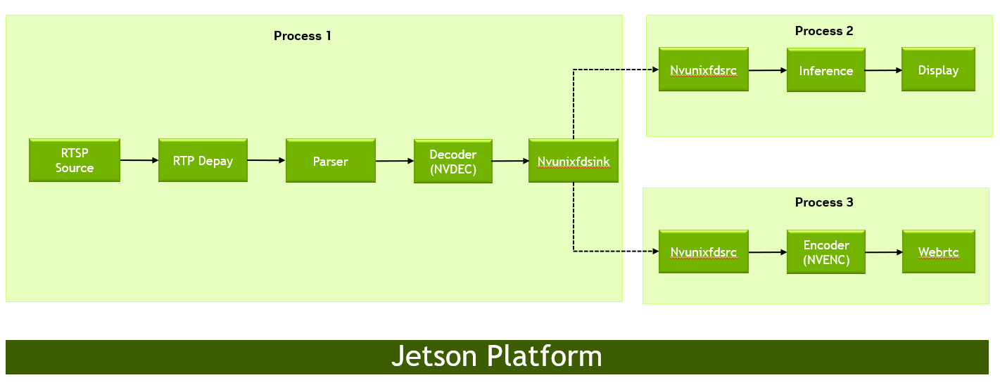

Accelerated GStreamer#
This topic is a guide to the GStreamer-1.0 version 1.20 based accelerated solution included in NVIDIA® Jetson™ Ubuntu 22.04.
GStreamer-1.0 Installation and Set up#
This section explains how to install and configure GStreamer.
Installing GStreamer-1.0#
Enter the commands:
$ sudo apt-get update $ sudo apt-get install gstreamer1.0-tools gstreamer1.0-alsa \ gstreamer1.0-plugins-base gstreamer1.0-plugins-good \ gstreamer1.0-plugins-bad gstreamer1.0-plugins-ugly \ gstreamer1.0-libav $ sudo apt-get install libgstreamer1.0-dev \ libgstreamer-plugins-base1.0-dev \ libgstreamer-plugins-good1.0-dev \ libgstreamer-plugins-bad1.0-dev
Checking the GStreamer-1.0 Version#
Enter the command:
$ gst-inspect-1.0 --version
Installing Accelerated GStreamer plugins#
To install the latest accelerated gstreamer plugins and applications, run the following commands:
$ sudo apt-get update $ sudo apt-get install nvidia-l4t-gstreamer $ sudo ldconfig $ rm -rf .cache/gstreamer-1.0/
GStreamer-1.0 Plugin Reference#
GStreamer-1.0 includes the following gst-v4l2 video decoders:
Video decoder |
Description |
|---|---|
nvv4l2decoder |
V4L2 H.265 Video decoder |
V4L2 H.264 Video decoder |
|
V4L2 VP8 video decoder |
|
V4L2 VP9 video decoder |
|
V4L2 MPEG4 video decoder |
|
V4L2 MPEG2 video decoder |
|
V4L2 JPEG/MJPEG video decoder |
|
V4L2 AV1 video decoder |
GStreamer-1.0 includes the following gst-v4l2 video encoders:
Video encoder |
Description |
|---|---|
nvv4l2h264enc |
V4L2 H.264 video encoder |
nvv4l2h265enc |
V4L2 H.265 video encoder |
nvv4l2av1enc |
V4L2 AV1 video encoder |
GStreamer-1.0 includes the following EGL™ image video sink:
Video sink |
Description |
|---|---|
nveglglessink |
EGL/GLES video sink element, support both the X11 and Wayland backends |
nv3dsink |
EGL/GLES video sink element |
GStreamer-1.0 includes the following DRM video sink:
Video sink |
Description |
|---|---|
nvdrmvideosink |
DRM video sink element |
GStreamer-1.0 includes the following proprietary NVIDIA plugins:
NVIDIA proprietary plugin |
Description |
|---|---|
nvarguscamerasrc |
Camera plugin for Argus API |
nvv4l2camerasrc |
Camera plugin for V4L2 API |
nvvidconv |
Video format conversion and scaling |
nvcompositor |
Video compositor |
nveglstreamsrc |
Acts as GStreamer Source Component, accepts EGLStream from EGLStream producer |
nvvideosink |
Video Sink Component. Accepts YUV-I420 format and produces EGLStream (RGBA) |
nvegltransform |
Video transform element for NVMM to EGLimage (supported with nveglglessink only) |
GStreamer-1.0 includes the following libjpeg-based JPEG image
video encode/decode plugins:
JPEG |
Description |
|---|---|
nvjpegenc |
JPEG encoder element |
nvjpegdec |
JPEG decoder element |
Note
Run the following command before starting the video decode pipeline using gst-launch-1.0 or nvgstplayer-1.0:
$ export DISPLAY=:0
Enter this command to start X server if it is not already running:
$ xinit &
Decode Examples#
The examples in this section show how you can perform audio and video decode with GStreamer.
Audio Decode Examples Using gst-launch-1.0#
The following examples show how you can perform audio decode using GStreamer-1.0.
AAC Decode (OSS Software Decode):
$ gst-launch-1.0 filesrc location=<filename.mp4> ! \ qtdemux name=demux demux.audio_0 ! \ queue ! avdec_aac ! audioconvert ! alsasink -e
AMR-WB Decode (OSS Software Decode):
$ gst-launch-1.0 filesrc location=<filename.mp4> ! \ qtdemux name=demux demux.audio_0 ! queue ! avdec_amrwb ! \ audioconvert ! alsasink -eAMR-NB Decode (OSS Software Decode):
$ gst-launch-1.0 filesrc location=<filename.mp4> ! \ qtdemux name=demux demux.audio_0 ! queue ! avdec_amrnb ! \ audioconvert ! alsasink -eMP3 Decode (OSS Software Decode):
$ gst-launch-1.0 filesrc location=<filename.mp3> ! mpegaudioparse ! \ avdec_mp3 ! audioconvert ! alsasink -eNote
To route audio over HDMI®, set the
alsasinkpropertydeviceto the value given for your platform in the table Port to device ID map in the topic Audio Setup and Development.For example, use
device=hw:0,7to route audio over the Jetson TX2 HDMI/DP 1 (HDMI) port.
Video Decode Examples Using gst-launch-1.0#
The following examples show how you can perform video decode on GStreamer-1.0.
Video Decode Using gst-v4l2#
The following examples show how you can perform video decode using
the gst-v4l2 plugin on GStreamer-1.0.
H.264 Decode (NVIDIA Accelerated Decode):
$ gst-launch-1.0 filesrc location=<filename_h264.mp4> ! \ qtdemux ! queue ! h264parse ! nvv4l2decoder ! nv3dsink -eH.265 Decode (NVIDIA Accelerated Decode):
$ gst-launch-1.0 filesrc location=<filename_h265.mp4> ! \ qtdemux ! queue ! h265parse ! nvv4l2decoder ! nv3dsink -e10-bit H.265 Decode (NVIDIA Accelerated Decode):
$ gst-launch-1.0 filesrc location=<filename_10bit.mkv> ! \ matroskademux ! queue ! h265parse ! nvv4l2decoder ! \ nvvidconv ! \ 'video/x-raw(memory:NVMM), format=(string)NV12' ! \ nv3dsink -e12-bit H.265 Decode (NVIDIA Accelerated Decode):
$ gst-launch-1.0 filesrc location=<filename_12bit.mkv> ! \ matroskademux ! queue ! h265parse ! nvv4l2decoder ! \ nvvidconv ! \ 'video/x-raw(memory:NVMM), format=(string)NV12' ! \ nv3dsink -e8-bit YUV444 (NV24) H.265 Decode (NVIDIA Accelerated Decode):
$ gst-launch-1.0 filesrc location=<filename_8bit_YUV444.265> ! \ h265parse ! nvv4l2decoder ! nvvidconv ! \ 'video/x-raw(memory:NVMM), format=(string)NV12' ! \ nv3dsink -eVP9 Decode (NVIDIA Accelerated Decode):
$ gst-launch-1.0 filesrc location=<filename_vp9.mkv> ! \ matroskademux ! queue ! nvv4l2decoder ! nv3dsink -eVP8 Decode (NVIDIA Accelerated Decode):
$ gst-launch-1.0 filesrc location=<filename_vp8.mkv> ! \ matroskademux ! queue ! nvv4l2decoder ! nv3dsink -eMPEG-4 Decode (NVIDIA Accelerated Decode):
$ gst-launch-1.0 filesrc location=<filename_mpeg4.mp4> ! \ qtdemux ! queue ! mpeg4videoparse ! nvv4l2decoder ! nv3dsink -eMPEG-4 Decode DivX 4/5 (NVIDIA Accelerated Decode):
$ gst-launch-1.0 filesrc location=<filename_divx.avi> ! \ avidemux ! queue ! mpeg4videoparse ! nvv4l2decoder ! nv3dsink -eMPEG-2 Decode (NVIDIA Accelerated Decode):
$ gst-launch-1.0 filesrc location=<filename_mpeg2.ts> ! \ tsdemux ! queue ! mpegvideoparse ! nvv4l2decoder ! nv3dsink -eAV1 Decode (NVIDIA Accelerated Decode):
$ gst-launch-1.0 filesrc location = <filename_av1.webm> ! \ matroskademux ! queue ! nvv4l2decoder ! nv3dsink -e
Supported Decoder Features with GStreamer-1.0#
This section describes usage examples for features supported by the NVIDIA accelerated decoder.
Features Supported Using gst-v4l2#
This section describes usage examples for features supported by the NVIDIA accelerated gst-v4l2 decoder.
Note
Display detailed information on the nvv4l2decoder property with the command:
$ gst-inspect-1.0 nvv4l2decoder
Disable the Decoded Picture Buffer (DPB):
$ gst-launch-1.0 filesrc \ location=<filename_h264.mp4> ! \ qtdemux ! queue ! h264parse ! nvv4l2decoder \ disable-dpb=true ! nv3dsink -e
This feature disables decoder DPB management, which allows low-latency. It only works when no B-frames are present in the stream.
Drop frame interval:
$ gst-launch-1.0 filesrc \ location=<filename_h264.mp4> ! \ qtdemux ! queue ! h264parse ! nvv4l2decoder \ drop-frame-interval=5 ! nv3dsink -e
This feature sets the interval after which the decoder outputs the frames. Rest frames are dropped.
Enable the error check:
$ gst-launch-1.0 filesrc \ location=<filename_h264.mp4> ! \ qtdemux ! queue ! h264parse ! nvv4l2decoder \ enable-error-check=true ! nv3dsink -eEnable full frame:
$ gst-launch-1.0 filesrc \ location=<filename_h264.mp4> ! \ qtdemux ! queue ! h264parse ! nvv4l2decoder \ enable-full-frame=true ! nv3dsink -e
When set to true, it indicates to the decoder that the input buffer contains one complete frame information.
Enable frame type reporting:
$ gst-launch-1.0 filesrc \ location=<filename_h264.mp4> ! \ qtdemux ! queue ! h264parse ! nvv4l2decoder \ enable-frame-type-reporting=true ! nv3dsink -eEnable the maximum performance mode:
$ gst-launch-1.0 filesrc location=<filename_h264.mp4> ! \ qtdemux ! queue ! h264parse ! nvv4l2decoder \ enable-max-performance=true ! nv3dsink -e
In this mode, you can expect increased power consumption.
Set skip frames:
$ gst-launch-1.0 filesrc location=<filename_h264.mp4> ! \ qtdemux ! queue ! h264parse ! nvv4l2decoder \ skip-frames=1 ! nv3dsink -e
The following frame types are supported for decode:
0: decode_all
1: decode_non_ref
2: decode_key
Decode MJPEG:
$ gst-launch-1.0 filesrc location=<filename>.mjpeg ! \ jpegparse ! nvv4l2decoder mjpeg=true ! nv3dsink -eDecode H.264/H.265 GDR [Gradual Decode Refresh] streams:
$ gst-launch-1.0 filesrc \ location=<filename_h264.mp4> ! \ qtdemux ! queue ! h264parse ! nvv4l2decoder \ is-gdr-stream=true ! nv3dsink -e
Image Decode Examples Using gst-launch-1.0#
The following example shows how you can perform JPEG decode on GStreamer-1.0.
JPEG Decode (NVIDIA Accelerated Decode):
$ gst-launch-1.0 filesrc location=<filename.jpg> ! nvjpegdec ! \ imagefreeze ! xvimagesink -e On Jetson, ``nvjpegdec`` supports the ``I420``, ``GRAY8``, ``YUY2``, ``YUV444``, ``NV12``, ``Y42B``, ``RGB``, and ``RGBA`` input formats.JPEG Decode with multifilesrc (NVIDIA Accelerated Decode):
$ gst-launch-1.0 multifilesrc location=<image>%d.jpg ! nvjpegdec ! \ 'video/x-raw(memory:NVMM), format=I420' ! nvvidconv ! \ 'video/x-raw, format=I420' ! multifilesink location=<raw>%d.yuv -e
Encode Examples#
The examples in this section show how you can perform audio and video encode with GStreamer-1.0.
Audio Encode Examples Using gst-launch-1.0#
The following examples show how you can perform audio encode on GStreamer-1.0.
AAC Encode (OSS Software Encode):
$ gst-launch-1.0 audiotestsrc ! \ 'audio/x-raw, format=(string)S16LE, layout=(string)interleaved, rate=(int)44100, channels=(int)2' ! \ voaacenc ! qtmux ! filesink location=test.mp4 -eAMR-WB Encode (OSS Software Encode):
$ gst-launch-1.0 audiotestsrc ! \ 'audio/x-raw, format=(string)S16LE, layout=(string)interleaved, \ rate=(int)16000, channels=(int)1' ! voamrwbenc ! qtmux ! \ filesink location=test.mp4 -e
Video Encode Examples Using gst-launch-1.0#
The following examples show how you can perform video encode with GStreamer-1.0.
Video Encode Using gst-v4l2#
The following examples show how you can perform video encode using
gst-v4l2 plugin with GStreamer-1.0.
H.264 Encode (NVIDIA Accelerated Encode):
$ gst-launch-1.0 nvarguscamerasrc ! \ 'video/x-raw(memory:NVMM), width=(int)1920, height=(int)1080, \ format=(string)NV12, framerate=(fraction)30/1' ! nvv4l2h264enc ! \ bitrate=8000000 ! h264parse ! qtmux ! filesink \ location=<filename_h264.mp4> -eNote
To enable max perf mode, use the maxperf-enable property of the
gst-v4l2encoder plugin. Expect increased power consumption in max perf mode.For example:
$ gst-launch-1.0 nvarguscamerasrc ! \ 'video/x-raw(memory:NVMM), width=(int)1920, height=(int)1080, \ format=(string)NV12, framerate=(fraction)30/1' ! nvv4l2h264enc \ maxperf-enable=1 bitrate=8000000 ! h264parse ! qtmux ! filesink \ location=<filename_h264.mp4> -e8-bit YUV444 (NV24) H.264 Encode (NVIDIA Accelerated Encode):
$ gst-launch-1.0 filesrc location=<filename_nv24_352_288.yuv>! \ videoparse width=352 height=288 format=52 framerate=30 ! \ 'video/x-raw, format=(string)NV24' ! nvvidconv ! \ 'video/x-raw(memory:NVMM), format=(string)NV24' ! nvv4l2h264enc \ profile=High444 ! h264parse ! filesink \ location=<filename_8bit_nv24.264> -e
Note
8-bit YUV444 H.264 encode is supported with High444 profile.
H.265 Encode (NVIDIA Accelerated Encode):
$ gst-launch-1.0 nvarguscamerasrc ! \ 'video/x-raw(memory:NVMM), width=(int)1920, height=(int)1080, \ format=(string)NV12, framerate=(fraction)30/1' ! nvv4l2h265enc \ bitrate=8000000 ! h265parse ! qtmux ! filesink \ location=<filename_h265.mp4> -eNote
Jetson AGX Orin supports 8Kp30 H.265 encode.
For example:
$ gst-launch-1.0 nvarguscamerasrc ! \ 'video/x-raw(memory:NVMM), width=(int)3840, \ height=(int)2160, format=(string)NV12, \ framerate=(fraction)30/1' ! nvvidconv ! \ 'video/x-raw(memory:NVMM), width=(int)7860, \ height=(int)4320, format=(string)NV12 ! nvv4l2h265enc \ preset-level=1 control-rate=1 bitrate=40000000 ! \ h265parse ! matroskamux ! \ filesink location=<filename_8k_h265.mkv> -e
10-bit H.265 Encode (NVIDIA Accelerated Encode):
$ gst-launch-1.0 nvarguscamerasrc ! \ 'video/x-raw(memory:NVMM), width=(int)1920, height=(int)1080, \ format=(string)NV12, framerate=(fraction)30/1' ! nvvidconv ! \ 'video/x-raw(memory:NVMM), format=(string)P010_10LE' ! \ nvv4l2h265enc bitrate=8000000 ! h265parse ! qtmux ! \ filesink location=<filename_10bit_h265.mp4> -e8-bit YUV444 (NV24) H.265 Encode (NVIDIA Accelerated Encode):
$ gst-launch-1.0 filesrc location=<filename_nv24_352_288.yuv> ! \ videoparse width=352 height=288 format=52 framerate=30 ! \ 'video/x-raw, format=(string)NV24' ! nvvidconv ! \ 'video/x-raw(memory:NVMM), format=(string)NV24' ! nvv4l2h265enc \ profile=Main ! h265parse ! filesink location=<filename_8bit_nv24.265> -e
Note
8-bit YUV444 H.265 encode is supported with Main profile.
AV1 Encode (NVIDIA Accelerated Encode):
$ gst-launch-1.0 nvarguscamerasrc ! \ 'video/x-raw(memory:NVMM), width=(int)1920, height=(int)1080, \ format=(string)NV12, framerate=(fraction)30/1' ! nvv4l2av1enc \ bitrate=20000000 ! webmmux ! filesink \ location=<filename_av1.webm> -eAV1 Encode with IVF Headers (NVIDIA Accelerated Encode):
$ gst-launch-1.0 nvarguscamerasrc ! \ 'video/x-raw(memory:NVMM), width=(int)1920, height=(int)1080, \ format=(string)NV12, framerate=(fraction)30/1' ! nvv4l2av1enc \ enable-headers=1 bitrate=8000000 ! filesink \ location=<filename_av1.av1> -e
Note
The frame rate limits vary between video encoders: H.264 supports 1 to 240 FPS, H.265 supports 1 to 60 FPS, AV1 supports 1 to 120 FPS.
Image Encode Examples Using gst-launch-1.0#
The following example shows how you can perform JPEG encode on GStreamer-1.0.
Image Encode:
$ gst-launch-1.0 videotestsrc num-buffers=1 ! \ 'video/x-raw, width=(int)640, height=(int)480, \ format=(string)I420' ! nvjpegenc ! filesink location=test.jpg -eNV12 Pitch-linear Image Encode:
$ gst-launch-1.0 videotestsrc num-buffers=1 ! \ 'video/x-raw, width=(int)640, height=(int)480, \ format=(string)NV12' ! nvvidconv bl-output=false ! \ 'video/x-raw(memory:NVMM)' ! nvjpegenc ! filesink location=test.jpg -eNV12 Block-linear Image Encode:
$ gst-launch-1.0 videotestsrc num-buffers=1 ! \ 'video/x-raw, width=(int)640, height=(int)480, \ format=(string)NV12' ! nvvidconv bl-output=true ! \ 'video/x-raw(memory:NVMM)' ! nvjpegenc ! filesink location=test.jpg -eMulti-file Encode:
$ gst-launch-1.0 videotestsrc num-buffers=100 ! \ 'video/x-raw, width=(int)640, height=(int)480, \ format=(string)NV12' ! nvvidconv ! \ 'video/x-raw(memory:NVMM)' ! nvjpegenc ! \ multifilesink location=<test>%d.jpeg -eSet IDCT method for Image Encode:
$ gst-launch-1.0 videotestsrc num-buffers=1 ! \ 'video/x-raw, width=(int)640, height=(int)480, \ format=(string)NV12' ! nvvidconv bl-output=true ! \ 'video/x-raw(memory:NVMM)' ! nvjpegenc idct-method=0 ! filesink location=test.jpg -eThe following modes are supported:
0: slow
1: ifast
2: float
Supported H.264/H.265/AV1 Encoder Features with GStreamer-1.0#
This section describes example gst-launch-1.0 usage for features supported by the NVIDIA accelerated H.264/H.265/AV1 encoders.
Features Supported Using gst-v4l2#
This section describes the gst-launch-1.0 usage for features supported by the NVIDIA accelerated H.264/H.265/AV1 gst-v4l2 encoders.
The following command displays detailed information about the nvv4l2h264enc, nvv4l2h265enc, or nvv4l2av1enc encoder properties:
$ gst-inspect-1.0 [nvv4l2h264enc | nvv4l2h265enc | nvv4l2av1enc]
Set the I-frame interval (supported with H.264/H.265/AV1 encode):
$ gst-launch-1.0 videotestsrc num-buffers=300 ! \ 'video/x-raw, width=(int)1280, height=(int)720, \ format=(string)I420, framerate=(fraction)30/1' ! nvvidconv ! \ 'video/x-raw(memory:NVMM), format=(string)NV12' ! nvv4l2h264enc \ iframeinterval=100 ! h264parse ! qtmux ! filesink \ location=<filename_h264.mp4> -e
This property sets the encoding Intra Frame GOP occurrence frequency.
Set the IDR-frame interval (supported with H.264/H.265/AV1 encode):
$ gst-launch-1.0 videotestsrc num-buffers=300 ! \ 'video/x-raw, width=(int)1280, height=(int)720, \ format=(string)I420, framerate=(fraction)30/1' ! nvvidconv ! \ 'video/x-raw(memory:NVMM), format=(string)NV12' ! nvv4l2h264enc \ idrinterval=60 ! h264parse ! qtmux ! filesink \ location=<filename_h264.mp4> -e
This property sets the encoding Intra Frame IDR occurrence frequency.
Enable Rate Control (supported with H.264/H.265/AV1 encode):
$ gst-launch-1.0 videotestsrc num-buffers=300 ! \ 'video/x-raw, width=(int)1280, height=(int)720, \ format=(string)I420, framerate=(fraction)30/1' ! nvvidconv ! \ 'video/x-raw(memory:NVMM), format=(string)NV12' ! nvv4l2h264enc \ ratecontrol-enable=0 quant-i-frames=30 quant-p-frames=30 \ quant-b-frames=30 ! filesink location=<filename_h264.264> -e
The supported modes are 0 (constant QP mode) and 1 (variable QP mode). The default mode is 1.
Set the rate control mode and bitrate (supported with H.264/H.265/AV1 encode):
Variable bitrate (VBR) mode:
$ gst-launch-1.0 videotestsrc num-buffers=300 ! \ 'video/x-raw, width=(int)1280, height=(int)720, \ format=(string)I420, framerate=(fraction)30/1' ! nvvidconv ! \ 'video/x-raw(memory:NVMM), format=(string)NV12' ! nvv4l2h264enc \ control-rate=0 bitrate=30000000 ! h264parse ! qtmux ! filesink \ location=<filename_h264_VBR.mp4> -eNote
AV1 codec does not currently support VBR mode.
Constant bitrate (CBR) mode:
$ gst-launch-1.0 videotestsrc num-buffers=300 ! \ 'video/x-raw, width=(int)1280, height=(int)720, \ format=(string)I420, framerate=(fraction)30/1' ! nvvidconv ! \ 'video/x-raw(memory:NVMM), format=(string)NV12' ! nvv4l2h264enc \ control-rate=1 bitrate=30000000 ! h264parse ! qtmux ! filesink \ location=<filename_h264_CBR.mp4> -e
The supported modes are 0 (VBR) and 1 (CBR).
Set the peak bitrate (supported with H.264/H.265 encode):
$ gst-launch-1.0 videotestsrc num-buffers=300 ! \ 'video/x-raw, width=(int)1280, height=(int)720, \ format=(string)I420, framerate=(fraction)30/1' ! nvvidconv ! \ 'video/x-raw(memory:NVMM), format=(string)NV12' ! nvv4l2h264enc \ bitrate=6000000 peak-bitrate=6500000 ! h264parse ! qtmux ! \ filesink location=<filename_h264.mp4> -e
Peak bitrate takes effect only in variable bit rate mode (
control-rate=0). By default, the value is configured as (1.2×bitrate).
Set the quantization parameter for I, P, and B frames (supported with H.264/H.265 encode):
$ gst-launch-1.0 videotestsrc num-buffers=300 ! \ 'video/x-raw, width=(int)1280, height=(int)720, \ format=(string)I420, framerate=(fraction)30/1' ! nvvidconv ! \ 'video/x-raw(memory:NVMM), format=(string)NV12' ! nvv4l2h264enc \ ratecontrol-enable=0 quant-i-frames=30 quant-p-frames=30 \ quant-b-frames=30 num-B-Frames=1 ! filesink \ location=<filename_h264.264> -e
The range of B frames does not take effect if the number of B frames is 0.
Set the quantization range for the I, P, and B frames (supported with H.264/H.265 encode). The format for the range is:
"<I_range>:<P_range>:<B_range>"
Where
<I_range>,<P_range>, and<B_range>are each expressed in the form <min>,<max>, as in this example:$ gst-launch-1.0 videotestsrc num-buffers=300 ! \ 'video/x-raw, width=(int)1280, height=(int)720, \ format=(string)I420, framerate=(fraction)30/1' ! nvvidconv ! \ 'video/x-raw(memory:NVMM), format=(string)NV12' ! nvv4l2h264enc \ qp-range="24,24:28,28:30,30" num-B-Frames=1 ! 'video/x-h264, \ stream-format=(string)byte-stream, alignment=(string)au' ! filesink \ location=<filename_h264.264> -e
Set the hardware preset level (supported with H.264/H.265/AV1 encode):
$ gst-launch-1.0 videotestsrc num-buffers=300 ! \ 'video/x-raw, width=(int)1280, height=(int)720, \ format=(string)I420, framerate=(fraction)30/1' ! nvvidconv ! \ 'video/x-raw(memory:NVMM), format=(string)NV12' ! nvv4l2h264enc \ preset-level=4 MeasureEncoderLatency=1 ! 'video/x-h264, \ stream-format=(string)byte-stream, alignment=(string)au' ! \ filesink location=<filename_h264.264> -e
The following modes are supported:
0: DisablePreset.
1: UltraFastPreset.
2: FastPreset: Only integer pixel (
integer-pel) block motion is estimated. For I/P macroblock mode decisions, only Intra 16×16 cost is compared with intermode costs. Supports Intra 16×16 and Intra 4×4 modes.3: MediumPreset: Supports up to half pixel (
half-pel) block motion estimation. For I/P macroblock mode decisions, only Intra 16×16 cost is compared with intermode costs. Supports Intra 16×16 and Intra 4×4 modes.4: SlowPreset: Supports up to quarter pixel (
Qpel) block motion estimation. For I/P macroblock mode decisions, Intra 4×4 as well as Intra 16×16 cost is compared with intermode costs. Supports Intra 16×16 and Intra 4×4 modes.
Note
AV1 codec currently supports only UltraFastPreset and FastPreset.
Set the profile (supported with H.264/H.265 encode):
$ gst-launch-1.0 videotestsrc num-buffers=300 ! \ 'video/x-raw, width=(int)1280, height=(int)720, \ format=(string)I420, framerate=(fraction)30/1' ! nvvidconv ! \ 'video/x-raw(memory:NVMM), format=(string)NV12' ! nvv4l2h264enc \ profile=0 ! 'video/x-h264, stream-format=(string)byte-stream, \ alignment=(string)au' ! filesink location=<filename_h264.264> -e
The following profiles are supported for H.264 encode:
0: Baseline profile
1: Constrained-Baseline
2: Main profile
4: High profile
7: High444 profile
17: Constrained-High
The following profiles are supported for H.265 encode:
0: Main profile
1: Main10 profile
Note
H.264 and H.265 codecs support setting of level and tier through caps negotiation.
Insert SPS and PPS at IDR (supported with H.264/H.265/AV1 encode):
$ gst-launch-1.0 videotestsrc num-buffers=300 ! \ 'video/x-raw, width=(int)1280, height=(int)720, \ format=(string)I420, framerate=(fraction)30/1' ! nvvidconv ! \ 'video/x-raw(memory:NVMM), format=(string)NV12' ! nvv4l2h264enc \ insert-sps-pps=1 ! \ 'video/x-h264, stream-format=(string)byte-stream, \ alignment=(string)au' ! filesink location=<filename_h264.264> -e
If enabled, a sequence parameter set (SPS) and a picture parameter set (PPS) are inserted before each IDR frame in the H.264/H.265 stream.
Note
In the AV1 codec, the property is called insert-seq-hdr. The sequential header is inserted before each IDR frame.
Enable the two-pass CBR (supported with H.264/H.265 encode):
$ gst-launch-1.0 videotestsrc num-buffers=300 ! \ 'video/x-raw, width=(int)1280, height=(int)720, \ format=(string)I420, framerate=(fraction)30/1' ! nvvidconv ! \ 'video/x-raw(memory:NVMM), format=(string)I420' ! nvv4l2h264enc \ control-rate=1 bitrate=10000000 EnableTwopassCBR=1 ! \ 'video/x-h264, stream-format=(string)byte-stream, \ alignment=(string)au' ! filesink location=<filename_h264.264> -e
Two-pass CBR must be enabled along with constant bit rate (
control-rate=1).Note
For multi-instance encode with two-pass CBR enabled, enable max perf mode by using the maxperf-enable property of the
gst-v4l2encoder to achieve best performance. Expect increased power consumption in max perf mode.
Slice header spacing with spacing in terms of macroblocks (Supported with H.264/H.265 encode):
$ gst-launch-1.0 videotestsrc num-buffers=300 ! \ 'video/x-raw, width=(int)1280, height=(int)720, \ format=(string)I420, framerate=(fraction)30/1' ! nvvidconv ! \ 'video/x-raw(memory:NVMM), format=(string)I420' ! nvv4l2h264enc \ slice-header-spacing=8 bit-packetization=0 ! 'video/x-h264, \ stream-format=(string)byte-stream, alignment=(string)au' ! \ filesink location=<filename_h264.264> -e
The
bit-packetization=0parameter configures the network abstraction layer (NAL) packet as macroblock (MB)-based, andslice-header-spacing=8configures each NAL packet as 8 macroblocks maximum.
Slice header spacing with spacing in terms of number of bits (supported with H.264/H.265 encode):
$ gst-launch-1.0 videotestsrc num-buffers=300 ! \ 'video/x-raw, width=(int)1280, height=(int)720, \ format=(string)I420, framerate=(fraction)30/1' ! nvvidconv ! \ 'video/x-raw(memory:NVMM), format=(string)I420' ! nvv4l2h264enc \ slice-header-spacing=1400 bit-packetization=1 ! 'video/x-h264, \ stream-format=(string)byte-stream, alignment=(string)au' ! \ filesink location=<filename_h264.264> -e
The parameter
bit-packetization=1configures the network abstraction layer (NAL) packet as size-based, andslice-header-spacing=1400configures each NAL packet as 1400 bytes maximum.
Enable CABAC-entropy-coding (supported with H.264 encode for main or high profile):
$ gst-launch-1.0 videotestsrc num-buffers=300 ! \ 'video/x-raw, width=(int)1280, height=(int)720, \ format=(string)I420, framerate=(fraction)30/1' ! nvvidconv ! \ 'video/x-raw(memory:NVMM), format=(string)I420' ! nvv4l2h264enc \ profile=2 cabac-entropy-coding=1 ! 'video/x-h264, \ stream-format=(string)byte-stream, alignment=(string)au' ! \ filesink location=<filename_h264.264> -e
The following entropy coding types are supported:
0: CAVLC
1: CABAC
Set the maximum number of reference frames for the encoder (supported with H.264/H.265/AV1 encode):
$ gst-launch-1.0 videotestsrc num-buffers=300 ! \ 'video/x-raw, width=(int)1280, height=(int)720, \ format=(string)I420, framerate=(fraction)30/1' ! nvvidconv ! \ 'video/x-raw(memory:NVMM), format=(string)NV12' ! nvv4l2h264enc \ num-Ref-Frames=2 ! 'video/x-h264, stream-format=(string)byte-stream, \ alignment=(string)au' ! filesink location=<filename_h264.264> -eEnable the copy timestamp (supported with H.264/H.265/AV1 encode):
$ gst-launch-1.0 videotestsrc num-buffers=300 ! \ 'video/x-raw, width=(int)1280, height=(int)720, \ format=(string)I420, framerate=(fraction)30/1' ! nvvidconv ! \ 'video/x-raw(memory:NVMM), format=(string)NV12' ! nvv4l2h264enc \ copy-timestamp=true ! 'video/x-h264, stream-format=(string)byte-stream, \ alignment=(string)au' ! filesink location=<filename_h264.264> -e
If enabled, it copies the timestamp from input buffer to the output bit-stream. Mostly useful in live/transcoding use cases.
Set the number of B frames between two reference frames (supported with H.264/H.265 encode):
$ gst-launch-1.0 videotestsrc num-buffers=300 ! \ 'video/x-raw, width=(int)1280, height=(int)720, \ format=(string)I420, framerate=(fraction)30/1' ! nvvidconv ! \ 'video/x-raw(memory:NVMM), format=(string)I420' ! nvv4l2h264enc \ num-B-Frames=1 ! 'video/x-h264, stream-format=(string)byte-stream, \ alignment=(string)au' ! filesink location=<filename_h264.264> -e
This property sets the number of B frames between two P frames.
Note
For multi-instance encode with
num-B-Frames=2, enable max perf mode by specifying the maxperf-enable property of thegst-v4l2encoder for best performance. Expect increased power consumption in max perf mode.
Set the slice intra-refresh period (supported with H.264/H.265 encode):
$ gst-launch-1.0 videotestsrc num-buffers=300 ! \ 'video/x-raw, width=(int)1280, height=(int)720, \ format=(string)I420, framerate=(fraction)30/1' ! nvvidconv ! \ 'video/x-raw(memory:NVMM), format=(string)NV12' ! nvv4l2h264enc \ slice-header-spacing=40 bit-packetization=0 SliceIntraRefreshInterval=60 ! \ h264parse ! filesink location=<filename_h264.264> -e
Enable the motion vector metadata (supported with H.264/H.265 encode):
$ gst-launch-1.0 videotestsrc num-buffers=300 ! \ 'video/x-raw, width=(int)1280, height=(int)720, \ format=(string)I420, framerate=(fraction)30/1' ! nvvidconv ! \ 'video/x-raw(memory:NVMM), format=(string)I420' ! nvv4l2h264enc \ EnableMVBufferMeta=1 ! 'video/x-h264, \ stream-format=(string)byte-stream, alignment=(string)au' ! \ filesink location=<filename_h264.264> -eSet the virtual buffer size (supported with H.264/H.265 encode):
$ gst-launch-1.0 videotestsrc num-buffers=300 ! \ 'video/x-raw, width=(int)1280, height=(int)720, \ format=(string)I420, framerate=(fraction)30/1' ! nvvidconv ! \ 'video/x-raw(memory:NVMM), format=(string)I420' ! nvv4l2h264enc \ vbv-size=10 ! h264parse ! qtmux ! \ filesink location=<filename_h264.mp4> -e
If the buffer size of the decoder or network bandwidth is limited, configuring virtual buffer size can cause the video stream generation to correspond to the limitations based on the following formula:
virtual buffer size = vbv-size × (bitrate/fps)
Insert AUD (supported with H.264/H.265 encode):
$ gst-launch-1.0 videotestsrc num-buffers=300 ! \ 'video/x-raw, width=(int)1280, height=(int)720, \ format=(string)I420, framerate=(fraction)30/1' ! nvvidconv ! \ 'video/x-raw(memory:NVMM), format=(string)I420' ! nvv4l2h264enc \ insert-aud=1 ! 'video/x-h264, stream-format=(string)byte-stream, \ alignment=(string)au' ! filesink location=<filename_h264.264> -e
This property inserts an H.264/H.265 Access Unit Delimiter (AUD).
Insert VUI (supported with H.264/H.265 encode):
$ gst-launch-1.0 videotestsrc num-buffers=300 ! \ 'video/x-raw, width=(int)1280, height=(int)720, \ format=(string)I420, framerate=(fraction)30/1' ! nvvidconv ! \ 'video/x-raw(memory:NVMM), format=(string)I420' ! nvv4l2h264enc \ insert-vui=1 ! 'video/x-h264, stream-format=(string)byte-stream, \ alignment=(string)au' ! filesink location=<filename_h264.264> -e
This property inserts H.264/H.265 video usability information (VUI) in SPS.
Enable loss-less YUV444 encoding (supported with H.264/H.265 encode):
$ gst-launch-1.0 videotestsrc num-buffers=300 ! \ 'video/x-raw, width=(int)1280, height=(int)720, \ format=(string)NV24, framerate=(fraction)30/1' ! nvvidconv ! \ 'video/x-raw(memory:NVMM), format=(string)NV24' ! nvv4l2h264enc \ profile=High444 enable-lossless=true ! h264parse ! \ filesink location=<filename_h264.264> -eSet the picture order count (POC) type (supported with H.264 encode):
$ gst-launch-1.0 videotestsrc num-buffers=300 ! \ 'video/x-raw, width=1920, height=1080, format=I420' ! nvvidconv ! \ nvv4l2h264enc \ poc-type=2 ! h264parse ! filesink location=<filename_h264.264> -e
The following values are supported for the poc-type property:
0: POC explicitly specified in each slice header (the default)
2: Decoding/coding order and display order are the same
Set the Disable CDF Update (supported with AV1 encode):
$ gst-launch-1.0 videotestsrc num-buffers=300 ! \ 'video/x-raw, width=1920, height=1080, format=I420' ! nvvidconv ! \ nvv4l2av1enc \ disable-cdf=0 enable-headers=1 ! filesink location=<filename_av1.av1> -eSet the Tile Configuration (supported with AV1 encode):
For 1x2 Tile configuration:
$ gst-launch-1.0 videotestsrc num-buffers=30 ! \ 'video/x-raw, width=1920, height=1080, format=I420' ! nvvidconv ! \ nvv4l2av1enc \ tiles="1,0" bitrate=20000000 ! qtmux ! \ filesink location= <filename_av1.mp4> -e
For 2x1 Tile configuration:
$ gst-launch-1.0 videotestsrc num-buffers=30 ! \ 'video/x-raw, width=1920, height=1080, format=I420' ! nvvidconv ! \ nvv4l2av1enc \ tiles="0,1" bitrate=20000000 ! qtmux ! \ filesink location= <filename_av1.mp4> -e
For 2x2 Tile configuration:
$ gst-launch-1.0 videotestsrc num-buffers=30 ! \ 'video/x-raw, width=1920, height=1080, format=I420' ! nvvidconv ! \ nvv4l2av1enc \ preset-level=1 tiles="1,1" bitrate=20000000 ! qtmux ! \ filesink location= <filename_av1.mp4> -e
The feature encode frames as super-macroblocks, with Log2(Rows) and Log2(Columns) as the input.
Set the SSIM RDO (supported with AV1 encode):
$ gst-launch-1.0 videotestsrc num-buffers=30 ! \ 'video/x-raw, width=1920, height=1080, format=I420' ! nvvidconv ! \ nvv4l2av1enc \ enable-srdo=1 ! qtmux ! \ filesink location= <filename_av1.mp4> -e
Camera Captures with GStreamer-1.0#
To display nvgstcapture-1.0 usage information, enter the command:
$ nvgstcapture-1.0 --help
Note
The nvgstcapture-1.0 application default only supports Argus API using the nvarguscamerasrc plugin.
For more information, see nvgstcapture-1.0 Reference.
Capturing with GStreamer-1.0#
Use the following command to capture by using
nvarguscamerasrcand preview display withnvdrmvideosink:$ gst-launch-1.0 nvarguscamerasrc ! "video/x-raw(memory:NVMM), \ width=(int)1920, height=(int)1080, format=(string)NV12, \ framerate=(fraction)30/1" ! queue ! nvdrmvideosink -eSet the processing deadline of the sink:
$ gst-launch-1.0 nvarguscamerasrc ! "video/x-raw(memory:NVMM), \ width=(int)3840, height=(int)2160, format=(string)NV12, \ framerate=(fraction)60/1" ! nv3dsink processing-deadline=0
Note
As per the GStreamer version 1.16 release notes, GstBaseSink gained a processing-deadline property and a setter/getter API to configure a processing deadline for live pipelines. For capture use cases, add the queue element or set the processing-deadline property to 0.
Progressive Capture Using nvv4l2camerasrc#
To capture and preview display with nv3dsink, enter the command:
$ gst-launch-1.0 nvv4l2camerasrc device=/dev/video3 ! \
'video/x-raw(memory:NVMM), format=(string)UYVY, \
width=(int)1920, height=(int)1080, \
interlace-mode= progressive, \
framerate=(fraction)30/1' ! nvvidconv ! \
'video/x-raw(memory:NVMM), format=(string)NV12' ! \
nv3dsink -e
Note
The nvv4l2camerasrc plugin default currently supports only DMABUF (importer role) streaming I/O mode with V4L2_MEMORY_DMABUF.
The nvv4l2camerasrc plugin is currently verified using the NVIDIA V4L2 driver with a sensor that supports YUV capture in UYVY format.
If you need to use a different type of sensor for capture in other YUV formats, see the topic
Sensor Software Driver Programming.
In that case nvv4l2camerasrc must also be enhanced for required YUV format support.
The nvgstcapture-1.0 application uses the v4l2src plugin to capture still images and video.
The following table shows USB camera support.
USB camera support |
Feature |
|---|---|
YUV |
Preview display |
Image capture (VGA, 640×480) |
|
Video capture (480p, 720p, H.264/H.265 encode) |
Raw-YUV Capture Using v4l2src#
Use the following command to capture raw YUV (I420 format) using v4l2src and preview display with xvimagesink:
$ gst-launch-1.0 v4l2src device="/dev/video0" ! \
"video/x-raw, width=640, height=480, format=(string)YUY2" ! \
xvimagesink -e
Camera Capture and Encode Support with OpenCV#
The OpenCV sample application opencv_nvgstcam simulates the camera
capture pipeline. Similarly, the OpenCV sample application
opencv_nvgstenc simulates the video encode pipeline.
Both sample applications are based on GStreamer 1.0. They currently are supported by OpenCV version provided in JetPack.
opencv_nvgstcam: Camera capture and preview.
To simulate the camera capture pipeline with the
opencv_nvgstcamsample application, enter the command:$ ./opencv_nvgstcam --help
Note
Currently,
opencv_nvgstcamonly supports single-instance CSI capture using thenvarguscamerasrcplugin. You can modify and rebuild the application to support GStreamer pipelines for CSI multi-instance captures and USB camera captures by using thev4l2srcplugin. The application uses an OpenCV-based video sink for display.For camera CSI capture and preview rendering with OpenCV, enter the command:
$ ./opencv_nvgstcam --width=1920 --height=1080 --fps=30
opencv_nvgstenc: Camera capture and video encode.
To simulate the camera capture and video encode pipeline with the
opencv_nvgstencsample application, enter the command:$ ./opencv_nvgstenc --help
Note
Currently,
opencv_nvgstenconly supports camera CSI capture using thenvarguscamerasrcplugin and video encode in H.264 format by using thenvv4l2h264encplugin with an MP4 container file. You can modify and rebuild the application to support GStreamer pipelines for different video encoding formats. The application uses an OpenCV-based video sink for display.For camera CSI capture and video encode with OpenCV, enter the command:
$ ./opencv_nvgstenc --width=1920 --height=1080 --fps=30 --time=60 \ --filename=test_h264_1080p_30fps.mp4
Video Playback with GStreamer-1.0#
To display nvgstplayer-1.0 usage information, enter the command:
$ nvgstplayer-1.0 --help
Video can be output to HD displays using the HDMI connector on the Jetson device. The GStreamer-1.0 application currently supports the following video sinks:
For overlay sink (video playback on overlay in full-screen mode), enter the command:
$ gst-launch-1.0 filesrc location=<filename.mp4> ! \
qtdemux name=demux ! h264parse ! nvv4l2decoder ! nvdrmvideosink -e
Video Playback Examples#
The following examples show how you can perform video playback using GStreamer-1.0.
nveglglessink(windowed video playback, NVIDIA EGL/GLES videosink using default X11 backend):Enter this command to start the GStreamer pipeline using
nveglglesinkwith the default X11 backend:$ gst-launch-1.0 filesrc location=<filename.mp4> ! \ qtdemux name=demux ! h264parse ! nvv4l2decoder ! nveglglessink -eThe
nvgstplayer-1.0application accepts command-line options that specify window position and dimensions for windowed playback:$ nvgstplayer-1.0 -i <filename> --window-x=300 --window-y=300 \ --window-width=500 --window-height=500nveglglessink(windowed video playback, NVIDIA EGL/GLES videosink using Wayland backend):You can use
nveglglessinkwith the Wayland backend instead of the default X11 backend.Ubuntu 20.04 does not support the Wayland display server, which means that there is no UI support to switch Wayland from Xorg. You must start the Wayland server (Weston) by using the target’s shell before performing Weston-based operations.
To start Weston, complete the following steps before you run the GStreamer pipeline the first time with the Wayland backend. The steps are not required after the initial run.
Start Weston:
$ nvstart-weston.sh
To run the GStreamer pipeline with the Wayland backend, run the following command to start the pipeline and use
nveglglesinkwith the Wayland backend:$ gst-launch-1.0 filesrc \ location=<filename.mp4> ! qtdemux name=demux ! h264parse ! \ nvv4l2decoder ! nveglglessink winsys=waylandnvdrmvideosink(video playback using DRM): This sink element uses DRM to render videos on connected displays.The display driver must be stopped, and DRM driver must be loaded before using the
nvdrmvideosink.Stop the display manager:
$ sudo systemctl stop gdm $ sudo loginctl terminate-seat seat0
Load the DRM driver:
For Jetson Orin use $ sudo modprobe nvidia-drm modeset=1
To start the GStreamer pipeline by using
nvdrmvideosink, run the following command:$ gst-launch-1.0 filesrc location=<filename.mp4> ! \ qtdemux! queue ! h264parse ! nvv4l2decoder ! nvdrmvideosink -envdrmvideosinksupports these propertiesconn_id: Set the connector ID for the display.plane_id: Set the plane ID.set_mode: Set the default mode (resolution) for playback.
The following command illustrates the use of these properties:
$ gst-launch-1.0 filesrc location=<filename.mp4> ! \ qtdemux! queue ! h264parse ! ! nvv4l2decoder ! nvdrmvideosink \ conn_id=0 plane_id=1 set_mode=0 -env3dsinkvideo sink (video playback using 3D graphics API): This video sink element works with NVMM buffers and renders using the 3D graphics rendering API. It performs better thannveglglessinkwith NVMM buffers.This command starts the GStreamer pipeline using
nv3dsink:$ gst-launch-1.0 filesrc location=<filename.mp4> ! \ qtdemux ! queue ! h264parse ! nvv4l2decoder ! nv3dsink -eThe sink supports setting a specific window position and dimensions using the properties shown in this example:
$ nv3dsink window-x=300 window-y=300 window-width=512 window-height=512
Video Decode Support with OpenCV#
You can simulate a video decode pipeline using the GStreamer-1.0-based
OpenCV sample application opencv_nvgstdec.
Note
The sample application is supported by OpenCV version provided in JetPack.
To perform video decoding with opencv_nvgstdec, enter the command:
$ ./opencv_nvgstdec --help
Note
Currently, opencv_nvgstdec only supports video decode of H264 format using the nvv4l2decoder plugin. You can modify and rebuild the application to support GStreamer pipelines for video decode of different formats. For display, the application utilizes an OpenCV based video sink component.
To perform video decoding with opencv_nvgstdec, enter the command:
$ ./opencv_nvgstdec --file-path=test_file_h264.mp4
Video Streaming with GStreamer-1.0#
This section describes procedures for video streaming with GStreamer 1.0.
To perform video streaming with nvgstplayer-1.0#
Using nvgstplayer-1.0: Enter the command:
$ nvgstplayer-1.0 -i rtsp://10.25.20.77:554/RTSP_contents/VIDEO/H264/ test_file_h264.3gp --statsThe supported formats for video streaming are:
MPEG4 MPEG4+AAC MPEG4+AAC PLUS MPEG4+eAAC PLUS MPEG4+AMR-NB MPEG4+AMR-WB H263 H263+AAC H263+AAC PLUS H263+AMR-NB H263+AMR-WB H264 H264+AAC H264+AAC PLUS H264+eAAC PLUS H264+AMR-NB H264+AMR-WB AAC AAC PLUS eAAC PLUS AMR-NB AMR-WB Using gst-launch-1.0 pipeline:
Streaming and video rendering:
Transmitting (from target): CSI camera capture + video encode + RTP streaming using network sink:
$ gst-launch-1.0 nvarguscamerasrc ! 'video/x-raw(memory:NVMM), \ format=NV12, width=1920, height=1080' ! \ nvv4l2h264enc insert-sps-pps=true ! h264parse ! \ rtph264pay pt=96 ! udpsink host=127.0.0.1 port=8001 sync=false -eReceiving (on target) : Network Source + video decode + video render:
$ gst-launch-1.0 udpsrc address=127.0.0.1 port=8001 \ caps='application/x-rtp, encoding-name=(string)H264, payload=(int)96' ! \ rtph264depay ! queue ! h264parse ! nvv4l2decoder ! nv3dsink -e
Streaming and file dump:
Transmitting (from target): CSI camera capture + video encode + RTP streaming using network sink:
$ gst-launch-1.0 nvarguscamerasrc ! \ 'video/x-raw(memory:NVMM), format=NV12, width=1920, height=1080' ! \ nvv4l2h264enc insert-sps-pps=true ! h264parse ! \ rtph264pay pt=96 ! udpsink host=127.0.0.1 port=8001 sync=false -eReceiving (on target): Network Source + video decode + file dump:
$ gst-launch-1.0 udpsrc address=127.0.0.1 port=8001 \ caps='application/x-rtp, encoding-name=(string)H264, payload=(int)96' ! \ rtph264depay ! queue ! h264parse ! nvv4l2decoder ! nvvidconv ! \ 'video/x-raw, format=(string)I420' ! filesink location=test.yuv -e
Video Format Conversion with GStreamer-1.0#
The NVIDIA proprietary nvvidconv GStreamer-1.0 plugin allows conversion between OSS (raw) video formats and NVIDIA video formats. The nvvidconv plugin currently supports the format conversions described in this section.
Raw-YUV Input Formats#
Currently VIC based nvvidconv on Jetson supports the I420, UYVY, YUY2, YVYU, NV12, NV16, NV24, P010_10LE, GRAY8, BGRx, RGBA, and Y42B RAW-YUV input formats and CUDA based nvvidconv on GPU supports the I420, NV12, P010_10LE, GRAY8, BGRx and RGBA input formats.
Enter the following commands to perform VIC-based conversion on Jetson Linux:
Using the
gst-v4l2encoder (with other than the GRAY8 pipeline):$ gst-launch-1.0 videotestsrc ! 'video/x-raw, format=(string)UYVY, \ width=(int)1280, height=(int)720' ! nvvidconv ! \ 'video/x-raw(memory:NVMM), format=(string)I420' ! \ nvv4l2h264enc ! 'video/x-h264, \ stream-format=(string)byte-stream' ! h264parse ! \ qtmux ! filesink location=test.mp4 -eUsing the
gst-v4l2encoder with the GRAY8 pipeline:$ gst-launch-1.0 videotestsrc ! 'video/x-raw, format=(string)GRAY8, \ width=(int)640, height=(int)480, framerate=(fraction)30/1' ! \ nvvidconv ! 'video/x-raw(memory:NVMM), format=(string)I420' ! \ nvv4l2h264enc ! 'video/x-h264, \ stream-format=(string)byte-stream' ! h264parse ! qtmux ! \ filesink location=test.mp4 -e
Enter the following commands to perform CUDA-based conversion on an integrated GPU:
Note
The gst-v4l2 encoder does not support CUDA memory, so the output of the first nvvidconv by using GPU is converted to surface array memory by using VIC.
Using the
gst-v4l2encoder (with other than the GRAY8 pipeline):$ gst-launch-1.0 videotestsrc ! 'video/x-raw, format=(string)NV12, \ width=(int)1280, height=(int)720' ! nvvidconv compute-hw=GPU \ nvbuf-memory-type=nvbuf-mem-cuda-device ! 'video/x-raw, \ format=(string)I420' ! nvvidconv compute-hw=VIC \ nvbuf-memory-type=nvbuf-mem-surface-array ! 'video/x-raw(memory:NVMM)' ! \ nvv4l2h264enc ! 'video/x-h264, \ stream-format=(string)byte-stream' ! h264parse ! \ qtmux ! filesink location=test.mp4 -eUsing the
gst-v4l2encoder with the GRAY8 pipeline:$ gst-launch-1.0 videotestsrc ! 'video/x-raw, format=(string)GRAY8, \ width=(int)640, height=(int)480, framerate=(fraction)30/1' ! \ nvvidconv compute-hw=GPU nvbuf-memory-type=nvbuf-mem-cuda-device ! \ 'video/x-raw, format=(string)I420' ! nvvidconv compute-hw=VIC \ nvbuf-memory-type=nvbuf-mem-surface-array ! 'video/x-raw(memory:NVMM)' ! \ nvv4l2h264enc ! 'video/x-h264, \ stream-format=(string)byte-stream' ! h264parse ! qtmux ! \ filesink location=test.mp4 -e
Enter the following command to perform CUDA-based format conversion on a dedicated GPU:
Note
The gst-v4l2 encoder can directly use the CUDA memory on a dedicated GPU.
Using the
gst-v4l2encoder:$ gst-launch-1.0 filesrc location=input_4k_60p.yuv ! videoparse width=3840 \ height=2160 format=i420 framerate=60 ! nvvidconv compute-hw=GPU \ nvbuf-memory-type=nvbuf-mem-cuda-device ! 'video/x-raw(memory:NVMM), \ width=(int)3840, height=(int)2160, format=(string)I420, framerate=60/1' ! \ nvv4l2h264enc ! 'video/x-h264, stream-format=(string)byte-stream, \ alignment=(string)au' ! h264parse ! qtmux ! \ filesink location=test.mp4 -e
Note
Format conversion with raw YUV input is CPU-intensive due to the “software to hardware” memory copies involved.
Raw-YUV Output Formats#
Currently VIC based nvvidconv on Jetson supports the I420, UYVY, YUY2, YVYU, NV12, NV16, NV24, GRAY8, BGRx, RGBA, and Y42B RAW-YUV output formats and CUDA based nvvidconv on GPU supports the I420, NV12, P010_10LE, I420_10LE, GRAY8, BGRx and RGBA output formats.
Enter the following commands to perform VIC based format conversion on Jetson Linux:
Using the
gst-v4l2decoder (with other than the GRAY8 pipeline):$ gst-launch-1.0 filesrc location=640x480_30p.mp4 ! qtdemux ! \ queue ! h264parse ! nvv4l2decoder ! nvvidconv ! \ 'video/x-raw, format=(string)UYVY' ! videoconvert ! xvimagesink -eUsing the
gst-v4l2decoder with the GRAY8 pipeline:$ gst-launch-1.0 filesrc location=720x480_30i_MP.mp4 ! qtdemux ! \ queue ! h264parse ! nvv4l2decoder ! nvvidconv ! 'video/x-raw, \ format=(string)GRAY8' ! videoconvert ! xvimagesink -e
Enter the following command to perform CUDA-based format conversion on an integrated GPU:
Using the
gst-v4l2decoder:$ gst-launch-1.0 filesrc location=640x480_30p.mp4 ! qtdemux ! \ queue ! h264parse ! nvv4l2decoder ! nvvidconv compute-hw=GPU \ nvbuf-memory-type=nvbuf-mem-cuda-device ! nv3dsink -e
Enter the following command to perform CUDA-based format conversion on a dedicated GPU:
Using the
gst-v4l2decoder:$ gst-launch-1.0 filesrc location=720x480_30i_MP.mp4 ! qtdemux ! \ h264parse ! nvv4l2decoder cudadec-memtype=1 ! nvvidconv compute-hw=GPU \ nvbuf-memory-type=nvbuf-mem-cuda-device ! nveglglessink -e
Note
Format conversion with raw YUV output is CPU-intensive due to the “hardware to software” memory copies involved.
NVIDIA Input and Output Formats#
Currently CUDA based nvvidconv on GPU supports the I420, NV12, P010_10LE, GRAY8, BGRx and RGBA input formats and supports the I420, NV12, P010_10LE, I420_10LE, GRAY8, BGRx and RGBA output formats and VIC based nvvidconv on Jetson supports the combinations of NVIDIA input and output formats described in the following table. Any format in the column on the left can be converted to any format in the same row in the column on the right.
|
NV12 NV24 |
NV16 |
NV12 NV24 |
NV16 |
|
I420 I420_12LE |
I420_10LE P010_10LE |
I420 |
I420_10LE P010_10LE |
|
UYVY YVYU BGRx GRAY8 |
YUY2 Y42B RGBA |
UYVY YVYU BGRx GRAY8 |
YUY2 Y42B RGBA |
Enter the following commands to perform VIC-based conversion between NVIDIA formats on Jetson Linux:
Using the
gst-v4l2decoder:$ gst-launch-1.0 filesrc location=1280x720_30p.mp4 ! qtdemux ! \ h264parse ! nvv4l2decoder ! nvvidconv ! \ 'video/x-raw(memory:NVMM), format=(string)RGBA' ! nvdrmvideosink -eUsing the
gst-v4l2encoder:$ gst-launch-1.0 nvarguscamerasrc ! \ 'video/x-raw(memory:NVMM), width=(int)1920, height=(int)1080, \ format=(string)NV12, framerate=(fraction)30/1' ! nvvidconv ! \ 'video/x-raw(memory:NVMM), format=(string)I420' ! nvv4l2h264enc ! \ h264parse ! qtmux ! filesink location=test.mp4 -eUsing the
gst-v4l2decoder and nv3dsink with the GRAY8 pipeline:$ gst-launch-1.0 filesrc location=1280x720_30p.mp4 ! qtdemux ! \ h264parse ! nvv4l2decoder ! nvvidconv ! \ 'video/x-raw(memory:NVMM), format=(string)GRAY8' ! nvvidconv ! \ 'video/x-raw(memory:NVMM), format=(string)I420' ! nv3dsink -e
Enter the following commands to perform CUDA-based conversion between NVIDIA formats on an integrated GPU:
Using the
gst-v4l2decoder:$ gst-launch-1.0 filesrc location=1280x720_30p.mp4 ! qtdemux ! \ h264parse ! nvv4l2decoder ! nvvidconv compute-hw=GPU \ nvbuf-memory-type=nvbuf-mem-cuda-device ! \ 'video/x-raw(memory:NVMM), format=(string)RGBA' ! nv3dsink -e
Note
The gst-v4l2 encoder does not support CUDA memory, so the output of the first nvvidconv by using GPU is converted to surface array memory by using VIC.
Using the
gst-v4l2encoder:$ gst-launch-1.0 nvarguscamerasrc ! \ 'video/x-raw(memory:NVMM), width=(int)1920, height=(int)1080, \ format=(string)NV12, framerate=(fraction)30/1' ! \ nvvidconv compute-hw=GPU nvbuf-memory-type=nvbuf-mem-cuda-device ! \ 'video/x-raw, format=(string)I420' ! \ nvvidconv compute-hw=VIC nvbuf-memory-type=nvbuf-mem-surface-array ! \ 'video/x-raw(memory:NVMM)' ! nvv4l2h264enc ! \ h264parse ! qtmux ! filesink location=test.mp4 -eUsing the
gst-v4l2decoder and nv3dsink with the GRAY8 pipeline:$ gst-launch-1.0 filesrc location=1280x720_30p.mp4 ! qtdemux ! \ h264parse ! nvv4l2decoder ! nvvidconv compute-hw=GPU \ nvbuf-memory-type=nvbuf-mem-cuda-device ! \ 'video/x-raw(memory:NVMM), format=(string)GRAY8' ! \ nvvidconv compute-hw=GPU nvbuf-memory-type=nvbuf-mem-cuda-device ! \ 'video/x-raw(memory:NVMM), format=(string)I420' ! nv3dsink -e
Enter the following commands to perform CUDA-based conversion between NVIDIA formats on a dedicated GPU:
Note
The gst-v4l2 encoder can directly use the CUDA memory on a dedicated GPU.
Using the
gst-v4l2encoder:$ gst-launch-1.0 filesrc location=input_4k_60p_NV12.yuv ! videoparse width=3840 \ height=2160 format=23 framerate=60 ! nvvidconv compute-hw=GPU \ nvbuf-memory-type=nvbuf-mem-cuda-device ! 'video/x-raw(memory:NVMM), \ width=(int)3840, height=(int)2160, format=(string)I420, framerate=60/1' ! \ nvv4l2h264enc ! 'video/x-h264, stream-format=(string)byte-stream, \ alignment=(string)au' ! h264parse ! qtmux ! \ filesink location=test.mp4 -eUsing the
gst-v4l2decoder:$ gst-launch-1.0 filesrc location=1280x720_30p.mp4 ! qtdemux ! \ h264parse ! nvv4l2decoder cudadec-memtype=1 ! nvvidconv compute-hw=GPU \ nvbuf-memory-type=nvbuf-mem-cuda-device ! 'video/x-raw(memory:NVMM), \ width=1280, height=720, format=(string)I420 ! nveglglessink -e
Video Scaling with GStreamer-1.0#
The NVIDIA proprietary nvvidconv GStreamer-1.0 plugin also allows you to
perform video scaling. The nvvidconv plugin currently supports scaling
with the format conversions described in this section.
Raw-YUV input formats:
Currently VIC based
nvvidconvon Jetson supports the I420, UYVY, YUY2, YVYU, NV12, NV16, NV24, P010_10LE, GRAY8, BGRx, RGBA, and Y42B RAW-YUV input formats for scaling and CUDA basednvvidconvon GPU supports the I420, NV12, P010_10LE, GRAY8, BGRx and RGBA input formats for scaling.Using the
gst-v4l2encoder and perform VIC based scaling on Jetson Linux:$ gst-launch-1.0 videotestsrc ! \ 'video/x-raw, format=(string)I420, width=(int)1280, \ height=(int)720' ! nvvidconv ! \ 'video/x-raw(memory:NVMM), width=(int)640, height=(int)480, \ format=(string)I420' ! nvv4l2h264enc ! \ 'video/x-h264, stream-format=(string)byte-stream' ! h264parse ! \ qtmux ! filesink location=test.mp4 -e
Note
The gst-v4l2 encoder does not support CUDA memory, so the output of the first nvvidconv by using GPU is converted to surface array memory by using VIC.
Using the
gst-v4l2encoder and perform CUDA-based scaling on an integrated GPU:$ gst-launch-1.0 videotestsrc ! \ 'video/x-raw, format=(string)I420, width=(int)1280, \ height=(int)720' ! nvvidconv compute-hw=GPU \ nvbuf-memory-type=nvbuf-mem-cuda-device ! \ 'video/x-raw, width=(int)640, height=(int)480, \ format=(string)I420' ! nvvidconv compute-hw=VIC \ nvbuf-memory-type=nvbuf-mem-surface-array ! \ 'video/x-raw(memory:NVMM)' ! nvv4l2h264enc ! \ 'video/x-h264, stream-format=(string)byte-stream' ! h264parse ! \ qtmux ! filesink location=test.mp4 -e
Note
The gst-v4l2 encoder can directly use the CUDA memory on a dedicated GPU.
Using the
gst-v4l2encoder and perform CUDA-based scaling on a dedicated GPU:$ gst-launch-1.0 filesrc location=input_4k_60p.yuv ! videoparse width=3840 \ height=2160 format=i420 framerate=60 ! nvvidconv compute-hw=GPU \ nvbuf-memory-type=nvbuf-mem-cuda-device ! 'video/x-raw(memory:NVMM), \ width=(int)1920, height=(int)1080, format=(string)I420, framerate=60/1' ! \ nvv4l2h264enc ! 'video/x-h264, stream-format=(string)byte-stream, \ alignment=(string)au' ! h264parse ! qtmux ! \ filesink location=test.mp4 -e
Note
Video scaling with raw YUV input is CPU-intensive due to the “software to hardware” memory copies involved.
Raw-YUV Output Formats:
Currently VIC based
nvvidconvon Jetson supports the I420, UYVY, YUY2, YVYU, NV12, NV16, NV24, GRAY8, BGRx, RGBA, and Y42B RAW-YUV output formats for scaling and CUDA basednvvidconvon GPU supports the I420, NV12, GRAY8, BGRx, RGBA, and I420_10LE output formats for scaling.Using the
gst-v4l2decoder and perform VIC based scaling on Jetson Linux:$ gst-launch-1.0 filesrc location=1280x720_30p.mp4 ! qtdemux ! \ queue ! h264parse ! nvv4l2decoder ! nvvidconv ! \ 'video/x-raw, format=(string)I420, width=640, height=480' ! \ xvimagesink -eUsing the
gst-v4l2decoder and perform CUDA-based scaling on an integrated GPU:$ gst-launch-1.0 filesrc location=1280x720_30p.mp4 ! qtdemux ! \ queue ! h264parse ! nvv4l2decoder ! nvvidconv compute-hw=GPU \ nvbuf-memory-type=nvbuf-mem-cuda-device ! \ 'video/x-raw, format=(string)I420, width=640, height=480' ! \ nv3dsink -eUsing the
gst-v4l2decoder and perform CUDA-based scaling on a dedicated GPU:$ gst-launch-1.0 filesrc location = 1280x720_30p.mp4 ! qtdemux ! \ h264parse ! nvv4l2decoder cudadec-memtype=1 ! nvvidconv compute-hw=GPU \ nvbuf-memory-type=nvbuf-mem-cuda-device ! 'video/x-raw(memory:NVMM), \ width=640, height=480' ! nveglglessink -e
Note
Video scaling with raw YUV output is CPU-intensive due to the “hardware to software” memory copies involved.
Video Cropping with GStreamer-1.0#
The NVIDIA proprietary nvvidconv GStreamer-1.0 plugin also allows you to
perform video cropping:
Using the
gst-v4l2decoder and perform VIC based cropping on Jetson Linux:$ gst-launch-1.0 filesrc location=<filename_1080p.mp4> ! qtdemux ! \ h264parse ! nvv4l2decoder ! \ nvvidconv left=400 right=1520 top=200 bottom=880 ! nv3dsink -eUsing the
gst-v4l2decoder and perform CUDA-based cropping on an integrated GPU:$ gst-launch-1.0 filesrc location=<filename_1080p.mp4> ! qtdemux ! \ h264parse ! nvv4l2decoder ! nvvidconv compute-hw=GPU \ nvbuf-memory-type=nvbuf-mem-cuda-device \ left=400 right=1520 top=200 bottom=880 ! nv3dsink -eUsing the
gst-v4l2decoder and perform CUDA-based cropping on a dedicated GPU:$ gst-launch-1.0 filesrc location=<filename_1080p.mp4> ! qtdemux ! \ h264parse ! nvv4l2decoder cudadec-memtype=1 ! nvvidconv compute-hw=GPU \ nvbuf-memory-type=nvbuf-mem-cuda-device \ left=400 right=1520 top=200 bottom=880 ! nveglglessink -e
Video Transcode with GStreamer-1.0#
You can perform video transcoding between the following video formats.
H.264 decode to AV1 Encode (NVIDIA accelerated decode to NVIDIA accelerated encode):
Using the
gst-v4l2pipeline:$ gst-launch-1.0 filesrc location=<filename_1080p.mp4> ! qtdemux ! \ h264parse ! nvv4l2decoder ! nvv4l2av1enc ! matroskamux name=mux ! \ filesink location=<Transcoded_filename.mkv> -e
H.265 decode to AV1 encode (NVIDIA accelerated decode to NVIDIA accelerated encode):
Using the
gst-v4l2pipeline:$ gst-launch-1.0 filesrc location=<filename.mp4> ! \ qtdemux name=demux demux.video_0 ! queue ! h265parse ! nvv4l2decoder ! \ nvv4l2av1enc bitrate=20000000 ! queue ! matroskamux name=mux ! \ filesink location=<Transcoded_filename.mkv> -e
VP8 decode to H.264 encode (NVIDIA accelerated decode to NVIDIA accelerated encode):
Using the
gst-v4l2pipeline:$ gst-launch-1.0 filesrc location=<filename.mebm> ! \ matroskademux name=demux demux.video_0 ! queue ! nvv4l2decoder ! \ nvv4l2h264enc bitrate=20000000 ! h264parse ! queue ! \ qtmux name=mux ! filesink location=<Transcoded_filename.mp4> -e
VP9 decode to H.265 encode (NVIDIA accelerated decode to NVIDIA accelerated encode):
Using the
gst-v4l2pipeline:$ gst-launch-1.0 filesrc location=<filename.webm> ! \ matroskademux name=demux demux.video_0 ! queue ! nvv4l2decoder ! \ nvv4l2h265enc bitrate=20000000 ! h265parse ! queue ! \ qtmux name=mux ! filesink location=<Transcoded_filename.mp4> -e
MPEG-4 decode to AV1 encode (NVIDIA accelerated decode to NVIDIA accelerated encode):
Using the
gst-v4l2pipeline:$ gst-launch-1.0 filesrc location=<filename.mp4> ! \ qtdemux name=demux demux.video_0 ! queue ! mpeg4videoparse ! \ nvv4l2decoder ! nvv4l2av1enc bitrate=20000000 ! queue ! \ matroskamux name=mux ! filesink \ location=<Transcoded_filename.mkv> -e
MPEG-4 decode to H.264 encode (NVIDIA accelerated decode to NVIDIA accelerated encode):
Using the
gst-v4l2pipeline:$ gst-launch-1.0 filesrc location=<filename.mp4> ! \ qtdemux name=demux demux.video_0 ! queue ! mpeg4videoparse ! \ nvv4l2decoder ! nvv4l2h264enc bitrate=20000000 ! h264parse ! \ queue ! qtmux name=mux ! filesink \ location=<Transcoded_filename.mp4> -e
H.264 decode to AV1 encode (NVIDIA accelerated decode to NVIDIA accelerated encode):
Using the
gst-v4l2pipeline:$ gst-launch-1.0 filesrc location=<filename.mp4> ! \ qtdemux name=demux demux.video_0 ! queue ! h264parse ! \ nvv4l2decoder ! nvv4l2av1enc bitrate=20000000 ! queue ! \ matroskamux name=mux ! \ filesink location=<Transcoded_filename.mkv> -e
H.265 decode to AV1 encode (NVIDIA accelerated decode to NVIDIA accelerated encode):
Using the
gst-v4l2pipeline:$ gst-launch-1.0 filesrc location=<filename.mp4> ! \ qtdemux name=demux demux.video_0 ! queue ! h265parse ! \ nvv4l2decoder ! nvv4l2av1enc bitrate=20000000 ! queue ! \ matroskamux name=mux ! \ filesink location=<Transcoded_filename.mkv> -e
VP8 decode to MPEG-4 encode (NVIDIA accelerated decode to OSS software encode):
Using the
gst-v4l2pipeline:$ gst-launch-1.0 filesrc location=<filename.mkv> ! \ matroskademux name=demux demux.video_0 ! queue ! nvv4l2decoder ! \ nvvidconv ! avenc_mpeg4 bitrate=4000000 ! queue ! \ qtmux name=mux ! filesink location=<Transcoded_filename.mp4> -e
VP9 decode to MPEG-4 encode (NVIDIA accelerated decode to OSS software encode):
Using the
gst-v4l2pipeline:$ gst-launch-1.0 filesrc location=<filename.mkv> ! \ matroskademux name=demux demux.video_0 ! queue ! nvv4l2decoder ! \ nvvidconv ! avenc_mpeg4 bitrate=4000000 ! qtmux name=mux ! \ filesink location=<Transcoded_filename.mp4> -e
Dynamic Resolution Change is supported for the Transcode pipeline:
Using the
gst-v4l2pipeline:$ gst-launch-1.0 filesrc location=<resolution_change_file.mp4> ! \ qtdemux name=demux demux.video_0 ! h264parse ! nvv4l2decoder ! \ nvv4l2h264enc ! h264parse ! filesink location=<drc_reencoded.h264> -e
CUDA Video Post-Processing with GStreamer-1.0#
This section describes GStreamer-1.0 plugins for NVIDIA® CUDA® post-processing operations.
gst-nvivafilter#
This NVIDIA proprietary GStreamer-1.0 plugin performs pre/post and CUDA
post-processing operations on CSI camera captured or decoded frames, and
renders video using overlay video sink or video encode.
.. note:: The gst-nvivafilter pipeline requires unsetting the DISPLAY environment variable using the command unset DISPLAY if lightdm is stopped.
Sample decode pipeline:
Using the
gst-v4l2decoder:$ gst-launch-1.0 filesrc location=<filename.mp4> ! qtdemux ! queue ! \ h264parse ! nvv4l2decoder ! nvivafilter cuda-process=true \ customer-lib-name="libnvsample_cudaprocess.so" ! \ 'video/x-raw(memory:NVMM), format=(string)NV12' ! \ nvdrmvideosink -e
Sample CSI camera pipeline:
$ gst-launch-1.0 nvarguscamerasrc ! \ 'video/x-raw(memory:NVMM), width=(int)3840, height=(int)2160, \ format=(string)NV12, framerate=(fraction)30/1' ! \ nvivafilter cuda-process=true \ customer-lib-name="libnvsample_cudaprocess.so" ! \ 'video/x-raw(memory:NVMM), format=(string)NV12' ! nv3dsink -e
Note
See nvsample_cudaprocess_src.tbz2 for the libnvsample_cudaprocess.so library sources. The sample CUDA implementation of libnvsample_cudaprocess.so can be replaced by a custom CUDA implementation.
Video Rotation with GStreamer-1.0#
The NVIDIA proprietary nvvidconv GStreamer-1.0 plugin also allows you to perform video rotation operations.
The following table shows the supported values for the nvvidconv flip-method property.
Flip method |
|
|---|---|
Identity (no rotation. default) |
0 |
Counterclockwise 90 degrees |
1 |
Rotate 180 degrees |
2 |
Clockwise 90 degrees |
3 |
Horizontal flip |
4 |
Upper right diagonal flip |
5 |
Vertical flip |
6 |
Upper left diagonal flip |
7 |
Note
To get information on the nvvidconv flip-method property, enter the command:
$ gst-inspect-1.0 nvvidconv
To rotate the video 90 degrees counterclockwise:
With
gst-v4l2decoder and perform VIC based rotation on Jetson Linux:$ gst-launch-1.0 filesrc location=<filename.mp4> ! \ qtdemux name=demux ! h264parse ! nvv4l2decoder ! \ nvvidconv flip-method=1 ! \ 'video/x-raw(memory:NVMM), format=(string)I420' ! \ nvdrmvideosink -eWith
gst-v4l2decoder and perform CUDA-based rotation on an integrated GPU:$ gst-launch-1.0 filesrc location=<filename.mp4> ! \ qtdemux ! h264parse ! nvv4l2decoder ! \ nvvidconv compute-hw=GPU nvbuf-memory-type=nvbuf-mem-cuda-device \ flip-method=1 ! 'video/x-raw(memory:NVMM), format=(string)I420' ! \ nv3dsink -eWith
gst-v4l2decoder and perform CUDA-based rotation on a dedicated GPU:$ gst-launch-1.0 filesrc location=<filename.mp4> ! \ qtdemux ! h264parse ! nvv4l2decoder cudadec-memtype=1 ! \ nvvidconv compute-hw=GPU nvbuf-memory-type=nvbuf-mem-cuda-device \ flip-method=1 ! 'video/x-raw(memory:NVMM)' ! \ nveglglessink -e
To rotate the video 90 degrees clockwise:
With
gst-v4l2decoder and perform VIC based rotation on Jetson Linux:$ gst-launch-1.0 filesrc location=<filename.mp4> ! \ qtdemux ! h264parse ! nvv4l2decoder ! \ nvvidconv flip-method=3 ! \ 'video/x-raw(memory:NVMM), format=(string)I420' ! \ nvdrmvideosink -eWith
gst-v4l2decoder and perform CUDA-based rotation on an integrated GPU:$ gst-launch-1.0 filesrc location=<filename.mp4> ! \ qtdemux ! h264parse ! nvv4l2decoder ! \ nvvidconv flip-method=3 compute-hw=GPU \ nvbuf-memory-type=nvbuf-mem-cuda-device ! \ 'video/x-raw(memory:NVMM), format=(string)I420' ! \ nv3dsink -e
To rotate 180 degrees:
With
nvarguscamerasrcand perform VIC based rotation on Jetson Linux:$ gst-launch-1.0 nvarguscamerasrc ! \ 'video/x-raw(memory:NVMM), width=(int)1920, height=(int)1080, \ format=(string)NV12, framerate=(fraction)30/1' ! \ nvvidconv flip-method=2 ! \ 'video/x-raw(memory:NVMM), format=(string)I420' ! nv3dsink -eWith
nvarguscamerasrcand perform CUDA-based rotation on an integrated GPU:$ gst-launch-1.0 nvarguscamerasrc ! \ 'video/x-raw(memory:NVMM), width=(int)1920, height=(int)1080, \ format=(string)NV12, framerate=(fraction)30/1' ! \ nvvidconv flip-method=2 compute-hw=GPU \ nvbuf-memory-type=nvbuf-mem-cuda-device ! \ 'video/x-raw(memory:NVMM), format=(string)I420' ! nv3dsink -e
To scale and rotate the video 90 degrees counterclockwise:
Using the
gst-v4l2decoder and perform VIC based rotation on Jetson Linux:$ gst-launch-1.0 filesrc location=<filename_1080p.mp4> ! qtdemux ! \ h264parse ! nvv4l2decoder ! nvvidconv flip-method=1 ! \ 'video/x-raw(memory:NVMM), width=(int)480, height=(int)640, \ format=(string)I420' ! nvdrmvideosink -eUsing the
gst-v4l2decoder and perform CUDA-based rotation on an integrated GPU:$ gst-launch-1.0 filesrc location=<filename_1080p.mp4> ! qtdemux ! \ h264parse ! nvv4l2decoder ! nvvidconv flip-method=1 \ compute-hw=GPU nvbuf-memory-type=nvbuf-mem-cuda-device ! \ 'video/x-raw(memory:NVMM), width=(int)480, height=(int)640, \ format=(string)I420' ! nv3dsink -e
To scale and rotate the video 90 degrees clockwise:
With
nvarguscamerasrcand perform VIC based rotation on Jetson Linux:$ gst-launch-1.0 nvarguscamerasrc ! \ 'video/x-raw(memory:NVMM), width=(int)1920, height=(int)1080, \ format=(string)NV12, framerate=(fraction)30/1' ! \ nvvidconv flip-method=3 ! 'video/x-raw(memory:NVMM), \ width=(int)480, height=(int)640, format=(string)I420' ! \ nv3dsink -eWith
nvarguscamerasrcand perform CUDA-based rotation on an integrated GPU:$ gst-launch-1.0 nvarguscamerasrc ! \ 'video/x-raw(memory:NVMM), width=(int)1920, height=(int)1080, \ format=(string)NV12, framerate=(fraction)30/1' ! \ nvvidconv flip-method=3 compute-hw=GPU \ nvbuf-memory-type=nvbuf-mem-cuda-device ! 'video/x-raw(memory:NVMM), \ width=(int)480, height=(int)640, format=(string)I420' ! \ nv3dsink -e
To scale and rotate the video 180 degrees:
Using the
gst-v4l2decoder and perform VIC based rotation on Jetson Linux:$ gst-launch-1.0 filesrc location=<filename_1080p.mp4> ! \ qtdemux ! h264parse ! nvv4l2decoder ! nvvidconv flip-method=2 ! \ 'video/x-raw(memory:NVMM), width=(int)640, height=(int)480, \ format=(string)I420' ! nvdrmvideosink -eUsing the
gst-v4l2decoder and perform CUDA-based rotation on an integrated GPU:$ gst-launch-1.0 filesrc location=<filename_1080p.mp4> ! \ qtdemux ! h264parse ! nvv4l2decoder ! nvvidconv flip-method=2 \ compute-hw=GPU nvbuf-memory-type=nvbuf-mem-cuda-device ! \ 'video/x-raw(memory:NVMM), width=(int)640, height=(int)480, \ format=(string)I420' ! nv3dsink -e
Video Composition with GStreamer-1.0#
With the NVIDIA proprietary nvcompositor GStreamer-1.0 plugin, you can perform video composition operations on camera and gst-v4l2 video decoded streams.
To composite decoded streams with different formats#
Using the
gst-v4l2decoder:$ gst-launch-1.0 nvcompositor \ name=comp sink_0::xpos=0 sink_0::ypos=0 sink_0::width=1920 \ sink_0::height=1080 sink_1::xpos=0 sink_1::ypos=0 \ sink_1::width=1600 sink_1::height=1024 sink_2::xpos=0 \ sink_2::ypos=0 sink_2::width=1366 sink_2::height=768 \ sink_3::xpos=0 sink_3::ypos=0 sink_3::width=1024 \ sink_3::height=576 ! 'video/x-raw(memory:NVMM)' ! nv3dsink \ filesrc location=<filename_h264_1080p_30fps.mp4> ! qtdemux ! \ h264parse ! nvv4l2decoder ! comp. filesrc \ location=<filename_h265_1080p_30fps.mp4> ! qtdemux ! h265parse ! \ nvv4l2decoder ! comp. filesrc \ location=<filename_av1_1080p_30fps.webm> ! matroskademux ! \ nvv4l2decoder ! comp. filesrc \ location=<filename_vp9_1080p_30fps.webm> ! \ matroskademux ! nvv4l2decoder ! comp. -e
To composite different camera feeds#
Using the
nvarguscamerasrc:$ gst-launch-1.0 nvcompositor \ name=comp sink_0::xpos=960 sink_0::ypos=540 sink_0::width=960 \ sink_0::height=540 sink_1::width=1920 sink_1::height=1080 ! \ 'video/x-raw(memory:NVMM)' ! queue ! nv3dsink \ nvarguscamerasrc sensor-id=0 ! \ 'video/x-raw(memory:NVMM), width=(int)1920, height=(int)1080, \ format=(string)NV12, framerate=30/1' ! comp. \ nvarguscamerasrc sensor-id=1 ! \ 'video/x-raw(memory:NVMM), width=(int)1920, height=(int)1080, \ format=(string)NV12, framerate=30/1' ! comp. -e
Interpolation Methods for Video Scaling#
The NVIDIA proprietary nvvidconv GStreamer-1.0 plugin allows you to
choose the interpolation method used for scaling.
The following table shows the supported values for the VIC based nvvidconv
interpolation-method property on Jetson.
Interpolation method |
|
|---|---|
Nearest (default) |
0 |
Bilinear |
1 |
5-tap |
2 |
10-tap |
3 |
Smart |
4 |
Nicest |
5 |
The following table shows the supported values for the CUDA based nvvidconv
interpolation-method property on GPU.
Interpolation method |
|
|---|---|
Nearest (default) |
0 |
Bilinear |
1 |
Cubic |
2 |
Super |
3 |
Lanczos |
4 |
Note
To display information about the nvvidconv interpolation-method property, enter the command:
$ gst-inspect-1.0 nvvidconv
To use bilinear interpolation method for scaling#
Using the
gst-v4l2pipeline and perform VIC based scaling on Jetson Linux:$ gst-launch-1.0 filesrc location=<filename_1080p.mp4>! \ qtdemux name=demux ! h264parse ! nvv4l2decoder ! \ nvvidconv interpolation-method=1 ! \ 'video/x-raw(memory:NVMM), format=(string)I420, width=1280, \ height=720' ! nvdrmvideosink -eUsing the
gst-v4l2pipeline and perform CUDA-based scaling on an integrated GPU:$ gst-launch-1.0 filesrc location=<filename_1080p.mp4> ! \ qtdemux name=demux ! h264parse ! nvv4l2decoder ! \ nvvidconv interpolation-method=1 compute-hw=GPU \ nvbuf-memory-type=nvbuf-mem-cuda-device ! \ 'video/x-raw(memory:NVMM), format=(string)I420, width=1280, \ height=720' ! nv3dsink -eUsing the
gst-v4l2pipeline and perform CUDA-based scaling on a dedicated GPU:$ gst-launch-1.0 filesrc location=<filename_1080p.mp4> ! \ qtdemux ! h264parse ! nvv4l2decoder cudadec-memtype=1 ! \ nvvidconv interpolation-method=1 compute-hw=GPU \ nvbuf-memory-type=nvbuf-mem-cuda-device ! \ 'video/x-raw(memory:NVMM), format=(string)NV12, width=1280, \ height=720' ! nveglglessink -e
EGLStream Producer Example#
The NVIDIA proprietary nveglstreamsrc and nvvideosink GStreamer-1.0
plugins allow simulation of an EGLStream producer pipeline (for preview only.)
To simulate an EGLStream producer pipeline, enter the command:
$ nvgstcapture-1.0 --camsrc=3
EGL Image Transform Example#
The NVIDIA proprietary nvegltransform GStreamer-1.0 plugin allows simulation of an EGLImage transform pipeline.
To simulate an EGL Image transform pipeline:
Using the
gst-v4l2pipeline:$ gst-launch-1.0 filesrc location=<filename_h264_1080p.mp4> ! \ qtdemux ! h264parse ! nvv4l2decoder ! nvegltransform ! nveglglessink -e
GStreamer Build Instructions#
To build the GStreamer manually, please follow the GStreamer guide for 1.20.3 version, GStreamer.
The NVIDIA gstreamer-1.0 libraries include:
libgstnvarguscamera.solibgstnvv4l2camerasrc.solibgstnvcompositor.solibgstnvdrmvideosink.solibgstnveglglessink.solibgstnveglstreamsrc.solibgstnvegltransform.solibgstnvivafilter.solibgstnvjpeg.solibgstnvtee.solibgstnvvidconv.solibgstnvvideo4linux2.solibgstnvvideocuda.solibgstnvvideosink.solibgstnvvideosinks.so
nvgstcapture-1.0 Reference#
This section describes the nvgstcapture-1.0 application.
Note
By default, nvgstcapture-1.0 only supports the Argus API using the nvarguscamerasrc plugin.
Command-Line Options#
To display command usage information, run nvgstcapture-1.0 with one of these command-line options:
-hor--help: Shows command-line options except for GStreamer options.--help-all: Shows all command-line options.--help-get: Shows GStreamer command-line options.
The following table describes the application’s other command-line options:
nvgstcapture-1.0 command line options |
|||
|---|---|---|---|
| Option | Description | Value and examples | |
| --prev_res | Preview width and height. |
Range: 2 to 8 (3840×2160)
|
|
| --cus-prev-res | Preview custom width and height (CSI only). | --cus-prev-res=1920x1080 |
|
| --image_res | Image width and height. |
Range: 2 to 12 (5632x4224)
|
|
| --video-res | Video width and height. |
Range: 2 to 9 (3896x2192)
|
|
| --camsrc | Camera source to use. |
0: V4L2 1: csi (default) 2: videotest 3: eglstream |
|
|
-m --mode |
Capture mode. |
1: still 2: video |
|
|
-v --video_inc |
Video encoder type. |
0: h264[HW][Default] 2: h265[HW] 4: h264 [SW] [Default for Jetson Orin Nano] |
|
|
-p --hw-enc-path |
Framework Type. |
0: CMX 1: V4L2 |
|
|
-b --enc-bitrate |
Video encoding bit-rate (in bytes). | --enc-bitrate=4000000 |
|
| --enc-controlrate | Video encoding bit rate control method. |
0: disabled 1: variable (default) 2: constant |
|
| --enc-EnableTwopassCBR | Enable two-pass CBR while encoding. |
0: disabled 1: enabled |
|
| --enc-profile | Video encoder profile (only for H.264). |
0: baseline 1: main 2: high |
|
| -j, --image_enc | Image encoder type. |
0: jpeg_SW[jpegenc] 1: jpeg_HW[nvjpegenc] |
|
| -k, --file_type | Container file type. |
0: MP4 1: 3GP 2: MKV |
|
| --file-name | Captured file name. ``nvcamtest`` is used by default. | ||
| --color-format | Color format to use. |
0: I420 1: NV12[For CSI only and default for CSI] 2: YUY2[For V4L2 only, default for V4L2] |
|
| --orientation | Camera sensor orientation value. | ||
| --eglConfig | EGL™ window coordinates in (x, y) order. | --eglConfig="50 100" |
|
|
-w --whitebalance | Capture white balance value. | ||
| --timeout | Capture timeout value. | ||
| --saturation | Camera saturation value. | ||
| --sensor-id | Camera Sensor ID value. | ||
| --display-id | [For nvoverlaysink only] Display ID value. | ||
| --overlayConfig | Overlay configuration options index and coordinates in (index, x, y, width, height) order. | --overlayConfig="0, 0, 0, 1280, 720" |
|
| --cap-dev-node | Video capture device node. |
0: /dev/video0[default] 1: /dev/video1 2: /dev/video2
|
|
| --svs=<chain> |
Where For USB, specifies a chain for video preview.
For CSI only, use |
||
| --exposuretimerange | Property to adjust exposure time range, in nanoseconds. | --exposuretimerange="34000 358733000" |
|
| --gainrange | Property to adjust gain range. | --gainrange="1 16" |
|
| --ispdigitalgainrange | Property to adjust digital gain range. |
Range value from 1 to 256.
|
|
| --aelock | Enable AE lock. | Default is disabled. | |
| --awblock | Enable AWB lock. | Default is disabled. | |
| --exposurecompensation | Property to adjust exposure compensation. |
Range value from −2.0 to 2.0.
|
|
| --aeantibanding | Property to set the auto exposure antibanding mode. |
Range value from 0 to 3.
|
|
| --tnr-mode | Property to select temporal noise reduction mode. | --tnr-mode=2
|
|
| --tnr-strength | Property to adjust temporal noise reduction strength. | --tnr-strength=0.5 |
|
| --ee-mode | Property to select edge enhancement mode. | --ee-mode=2
|
|
| --ee-strength | Property to adjust edge enhancement strength. | --ee-strength=0.5 |
|
CSI Camera Supported Resolutions#
CSI camera supports the following image resolutions for Nvarguscamera:
640×480
1280×720
1920×1080
2104×1560
2592×1944
2616×1472
3840×2160
3896×2192
4208×3120
5632×3168
5632×4224
CSI Camera Runtime Commands#
Options for nvarguscamerasrc#
The following table describes CSI camera runtime command-line options for nvarguscamerasrc.
Nvarguscamera command-line options |
||
|---|---|---|
Command |
Description |
Value and examples |
h |
Help. |
— |
q |
Quit. |
— |
mo:<value> |
Set capture mode. |
1: image 2: video |
gmo |
Get capture mode. |
— |
so:<val> |
Set sensor orientation. |
0: none 1: rotate counter-clockwise 90° 2: rotate 180° 3: rotate clockwise 90° |
gso |
Get sensor orientation. |
— |
wb:<value> |
Set white balance mode. |
0: off 1: auto 2: incandescent 3: fluorescent 4: warm-fluorescent 5: daylight 6: cloudy-daylight 7: twilight 8: shade 9: manual |
gwb |
Get white balance mode. |
— |
st:<value> |
Set saturation. |
0-2 Example: |
gst |
Get saturation. |
— |
j |
Capture one image. |
— |
jx<sec> |
Capture after a delay of
|
— Example: |
j:<value> |
Capture |
— Example: |
0 |
Stop recording video. |
— |
1 |
Start recording video. |
— |
2 |
Video snapshot (while recording video). |
— |
gpcr |
Get preview resolution. |
— |
gicr |
Get image capture resolution. |
— |
gvcr |
Get video capture resolution. |
— |
USB Camera Runtime Commands#
The following table describes USB camera runtime commands.
USB camera runtime commands |
||
|---|---|---|
Command |
Description |
Value and examples |
h |
Help. |
— |
q |
Quit. |
— |
mo:<value> |
Set capture mode. |
1: image 2: video |
gmo |
Get capture mode. |
— |
j |
Capture one image. |
— |
jx<ms> |
Capture after a delay of
|
— Example: |
j:<n> |
Capture |
— Example: |
1 |
Start recording video. |
— |
0 |
Stop recording video. |
— |
pcr:<value> |
Set preview resolution. |
0: 176×144 1: 320×240 2: 640×480 3: 1280×720 |
gpcr |
Get preview resolution. |
— |
gicr |
Get image capture resolution. |
— |
gvcr |
Get video capture resolution. |
— |
br:<value> |
Set encoding bit rate in bytes. |
Example: |
gbr |
Get encoding bit rate. |
— |
cdn:<value> |
Set capture device node. |
0: 1: 2: |
gcdn |
Get capture device node. |
— |
Runtime Video Encoder Configuration Options#
The following table describes runtime video encoder configuration
options supported for nvarguscamerasrc.
Runtime video encoder options |
||
|---|---|---|
Command |
Description |
Value and examples |
br:<val> |
Sets encoding bit-rate in bytes. |
Example: |
gbr |
Gets encoding bit-rate in bytes. |
— |
ep:<val> |
Sets encoding profile (for H.264 only). |
0: baseline 1: main 2: high Example: |
gep |
Gets encoding profile (for H.264 only). |
— |
f |
Forces IDR frame on video encoder (for H.264 only). |
— |
Notes#
nvgstcapture-1.0generates image and video output files in the same directory as the application itself.Filenames are respectively in these formats:
Image content:
nvcamtest_<pid>_<sensor_id>_<counter>.jpgVideo content:
nvcamtest_<pid>_<sensor_id>_<counter>.mp4
Where:
<pid>is the process ID.<sensor_id>is the sensor ID.<counter>is a counter starting from 0 each time the application is run.
Rename or move files between runs to avoid overwriting results you want to save.
The application supports native capture mode (video only) by default.
Advanced features, such as setting zoom, brightness, exposure, and whitebalance levels, are not supported for USB cameras.
nvgstplayer-1.0 Reference#
This section describes the operation of the the nvgstplayer-1.0 application.
nvgstplayer-1.0 Command-Line Options#
Note
To list supported options, enter the command:
$ nvgstplayer-1.0 --help
This table describes nvgstplayer-1.0 command-line options.
nvgstplayer-1.0 command line options |
||
|---|---|---|
| Option | Description and examples | |
| -u <path> --urifile <path> |
Path of the file containing the URIs. Example: |
|
|
-i <uri> --uri <uri> |
Input URI. Examples: |
|
|
-e <path> --elemfile <path> |
Elements (Properties) file. The element file may contain an audio or video processing elements chain. Examples: |
|
|
-x --cxpr |
Command sequence expression. Example: |
|
|
-n <n> --loop <n> |
Number of times to play the media. |
|
|
-c <n> --audio-track <n> |
If a stream has multiple audio tracks, specifies the track number to play |
|
|
-v <n> --video-track <n> |
If a stream has multiple video tracks, specifies the track number to play. |
|
|
-a <sec> --start <sec> |
Point to start playback, in seconds from the beginning of the media segment. |
|
|
-d <sec> --duration <sec> |
Duration of playback, in seconds. |
|
| --no-sync | Disable AV sync. |
|
| --disable-dpms |
Unconditionally disable DPMS/ScreenBlanking during operation; re-enable on exit. |
|
| --stealth |
Operate in stealth mode, staying alive even when no media is playing. |
|
| --bg | Operate in background mode, ignoring keyboard input. |
|
| --use-playbin | Use Playbin GStreamer element. |
|
| --no-audio | Disable audio. |
|
| --no-video | Disable video. |
|
| --disable-anative | Disable native audio rendering. |
|
| --disable-vnative | Disable native video rendering. |
|
| --use-buffering |
Enable decodebin property for emitting |
|
|
-l <pct> --low-percent <pct> |
Low threshold for buffering to start, in pct. |
|
|
-j <pct> --high-percent <pct> |
High threshold for buffering to finish, in percent. |
|
| --loop-forever | Play the URI(s) in an endless loop. |
|
|
-t <sec> --max-size-time <sec> |
Maximum time in queue, in seconds (0=automatic). |
|
|
-y <n> --max-size-bytes <n> |
Maximum amount of memory in the queue, in bytes (0=automatic). |
|
|
-b <n> --max-size-buffers <n> |
Maximum number of buffers in the queue (0=automatic). |
|
| --window-x <n> | X coordinate for player window (for non-overlay rendering). |
|
| --window-y <n> | Y coordinate for player window (for non-overlay rendering). |
|
| --window-width <n> | Window width (for non-overlay rendering). |
|
| --window-height <n> | Window height (for non-overlay rendering). |
|
| --disable-fullscreen | Play video in non-full-screen mode (for nveglglessink). |
|
|
-k <sec> --image-display-time <sec> |
Image display time, in seconds. |
|
| --show-tags | Shows tags (metadata), if available. |
|
| --stats | Shows stream statistics, if enabled. |
|
| --stats-file | File to dump stream statistics, if enabled. |
|
| --svd=<chain> | Chain to use for video decoding. |
Where <chain> is as described below. |
| --sad=<chain> | Chain to use for audio decoding. |
|
| --svc=<chain> | Chain to use for video postprocessing. |
|
| --sac=<chain> | Chain to use for audio postprocessing. |
|
| --svs=<chain> | Chain to use for video rendering. |
|
| --sas=<chain> | Chain to use for audio rendering. |
|
| --shttp=<chain> | Chain to use for HTTP source. |
|
| --srtsp=<chain> | Chain to use for RTSP source. |
|
| --sudp=<chain> | Chain to use for UDP source. |
|
| --sfsrc=<chain> | Chain to use for file source. |
|
|
Examples: |
||
nvgstplayer-1.0 Runtime Commands#
This table describes nvgstplayer runtime commands.
nvgstplayer-1.0 runtime commands |
|
|---|---|
| Option | Description and examples |
| h | Help. |
| q | Quit. |
|
Up arrow ] |
Go to next track. |
| c | Restart current track. |
|
Down arrow [ |
Go to previous track. |
| spos | Query for position (time from start). |
| sdur | Query for duration. |
| s<sec> |
Seek to Example: |
| v<pct> |
Seek to Example: |
| f<sec> |
Shift Example: |
|
Left arrow < |
Seek backward 10 seconds. |
|
Right arrow > |
Seek forward 10 seconds. |
| p | Pause playback. |
| r | Start/resume playback. |
| z | Stop playback. |
| i:<uri> | Enter a single URI. |
Video Encoder Features#
The respective GStreamer-1.0-based gst-v4l2 video encoders support the following features:
gst-v4l2 video encoder features |
||||
|---|---|---|---|---|
| Feature | H264enc | H265enc | AV1enc | |
| profile (Baseline / Main / High) | ✓ (all) | ✓ (main) | — | |
| control-rate | ✓ | ✓ | ✓ | |
| bitrate | ✓ | ✓ | ✓ | |
| insert-spsppsatidr | ✓ | ✓ | — | |
| profile | ✓ | ✓ | — | |
| quantization range for I, P, and B frame | ✓ | ✓ | — | |
| iframeinterval | ✓ | ✓ | ✓ | |
| qp-range | ✓ | ✓ | ✓ | |
| bit-packetization | ✓ | ✓ | — | |
| preset-level | ✓ | ✓ | ✓ | |
| slice-header spacing | ✓ | ✓ | — | |
| force-IDR | ✓ | ✓ | ✓ | |
| enable TwoPassCBR | ✓ | ✓ | — | |
| enable CABAC-entropy-coding | ✓ | — | — | |
| enable MVBufferMeta | ✓ | ✓ | — | |
| insert aud | ✓ | ✓ | — | |
| insert vui | ✓ | ✓ | — | |
| num-B-Frames | ✓ | ✓ | — | |
| picture order count type | ✓ | — | — | |
Supported Cameras#
This section describes the supported cameras.
CSI Cameras#
Jetson AGX Orin series can capture camera images using the CSI interface.
- Jetson AGX Orin series supports RAW Bayer capture data.
GStreamer supports simultaneous capture from multiple CSI cameras. Support is validated using the
nvgstcaptureapplication.- Capture is validated for SDR modes for various sensors using the
nvgstcaptureapplication.
- Capture is validated for SDR modes for various sensors using the
- Jetson AGX Orin series also support the MIPI CSI virtual channel feature. The virtual channel is a unique channel identifier that is used for multiplexed sensor streams that share the same CSI port/brick and CSI stream through supported Gigabit Multimedia Serial Link (GMSL)aggregators.
USB 2.0 Cameras#
The following camera has been validated on Jetson platforms running Jetson Linux with USB 2.0 ports. This camera is UVC compliant.
Industrial Camera Details#
The following USB 3.0 industrial camera is validated on Jetson AGX Orin series under Jetson Linux:
Characteristics of this camera are:
USB 3.0
UVC compliant
3840×2160 at 30 FPS; 4224×3156 at 13 FPS
Purpose—embedded navigation
Test using the nvgstcapture app.
Issues encountered:
FPS cannot be fixed. Changes based on exposure.
FPS cannot be changed. Needs payment to vendor to get the support added to their firmware.
IPC Plugins#
The GStreamer IPC plugins enable the division of a GStreamer pipeline into multiple processes. These plugins provide the necessary elements to interconnect GStreamer pipelines running in different processes.
Name |
Description |
|---|---|
nvipcpipelinesink |
IPC sink element derived from OSS ipcpipelinesink element |
nvipcpipelinesrc |
IPC source element derived from OSS ipcpipelinesrc element |
nvipcslavepipeline |
IPC slave pipeline element derived from OSS ipcslavepipeline element |
nvunixfdsink |
Unix file descriptor sink derived from OSS unixfdsink element |
nvunixfdsrc |
Unix file descriptor source derived from OSS unixfdsrc element |
Note
The nvunixfdsink and nvunixfdsrc plugins are recommended and supported for IPC. The nvipcpipelinesink, nvipcpipelinesrc, and nvipcslavepipeline plugins are deprecated.
Decoder IPC Functionality#
In most cases, decoding operations are carried out within a single process that may involve multiple threads to achieve parallel processing on a Linux host system. However, specific situations necessitate cross-process decoding. This approach is particularly useful when multiple processes on the same device need to use separate hardware video decoder instances to decode live streams. To optimize hardware video decoder utilization on the device, decoded buffers of live streams must be shared across multiple processes.
The diagram below shows the GStreamer pipeline for the decoder IPC use-case.

The GStreamer pipeline splits into multiple processes using nvunixfdsink, which serves as the sink for the first pipeline, and nvunixfdsrc, which serves as the source for the
second pipeline. These two components are connected using a Unix socket, allowing buffers to be transferred between the pipelines.
GStreamer Commands#
Server:
$ gst-launch-1.0 uridecodebin uri=<rtsp_url> ! queue ! \ nvunixfdsink socket-path=/tmp/test1 sync=false -vClient:
$ gst-launch-1.0 nvunixfdsrc socket-path=/tmp/test1 ! \ 'video/x-raw(memory:NVMM), format=NV12' ! \ queue ! nv3dsink sync=false -v
nvgstipctestapp Reference#
This section describes the operation of the the nvgstipctestapp sample application. nvgstipctestapp is developed to demonstrate decoder IPC functionality, operating as
either a server or client depending on the command line arguments provided.
Command-Line Options#
The following describes nvgstipctestapp command-line options:
nvgstipctestapp server <RTSP_URL> <socket_path>
For example:
$ export DISPLAY=:0 $ nvgstipctestapp server rtsp://127.0.0.1/video1 /tmp/test1
nvgstipctestapp client <socket_path>
For example:
$ export DISPLAY=:0 $ nvgstipctestapp client /tmp/test1
Server-Client Communication#
The server accepts an H.264/H.265 video stream RTSP URL and an IPC socket path as input. It listens for connections on the specified IPC socket path. After accepting the connection request, the server sends the dmabuf fd
of the decoded data over a Unix socket to all connected clients. When the server receives acknowledgment from all connected decoder clients, it reuses the decoded buffer for decoding another buffer.
On the other hand, the client can only accept the IPC socket path as input. It sends a connection request to the server, which, upon accepting the request, starts receiving the dmabuf fd
of the decoded data over the Unix socket. The client then pushes it further into the pipeline. To complete the process, the client sends an acknowledgment to the server immediately after the decoded buffer is used.